<!doctype html>
<html lang="en">
<head>
  <meta charset="utf-8">
  <meta name="viewport" content="width=device-width, initial-scale=1">
  <title>arxiv digest — 2026-10-08</title>
  <style>
:root {
  --bg: #ffffff;
  --fg: #1f2328;
  --muted: #59636e;
  --border: #d0d7de;
  --card: #f6f8fa;
  --link: #0969da;
}
body {
  max-width: 980px;
  margin: 0 auto;
  padding: 2rem 1rem 5rem;
  font-family: -apple-system, BlinkMacSystemFont, "Segoe UI", Helvetica, Arial, sans-serif;
  line-height: 1.55;
  color: var(--fg);
  background: var(--bg);
}
a { color: var(--link); }
img { max-width: 100%; height: auto; }
pre, code { background: var(--card); border-radius: 6px; }
pre { padding: 1rem; overflow-x: auto; }
blockquote { border-left: 4px solid var(--border); padding-left: 1rem; color: var(--muted); }
details { margin: 0.6rem 0; }
summary { cursor: pointer; font-weight: 600; }
.paper-figures-scroll {
  display: flex;
  gap: 1rem;
  overflow-x: auto;
  overscroll-behavior-x: contain;
  padding: 0.75rem 0.25rem 1rem;
  margin: 1rem 0 1.25rem;
  border-top: 1px solid var(--border);
  border-bottom: 1px solid var(--border);
  scroll-snap-type: x proximity;
}
.paper-figure-card {
  flex: 0 0 min(260px, 72vw);
  scroll-snap-align: start;
  background: var(--card);
  border: 1px solid var(--border);
  border-radius: 12px;
  padding: 0.55rem;
}
.paper-figure-card img {
  display: block;
  width: 100%;
  max-height: 240px;
  object-fit: contain;
  background: white;
  border-radius: 8px;
}
.paper-figure-caption {
  display: block;
  margin-top: 0.5rem;
  color: var(--muted);
  font-size: 0.85rem;
}
.figure-strip-hint {
  color: var(--muted);
  font-size: 0.9rem;
  margin-bottom: -0.3rem;
}
</style>
  <!-- MathJax: renders $...$ inline math and $$...$$ display math, plus
       \(...\) and \[...\]. Loaded from the official CDN; works offline
       once cached. Configured to skip code/pre blocks so arxiv IDs that
       look like dollar amounts don't get mangled. -->
  <script>
    window.MathJax = {
      tex: {
        inlineMath: [['$', '$'], ['\\(', '\\)']],
        displayMath: [['$$', '$$'], ['\\[', '\\]']],
        processEscapes: true,
        processEnvironments: true
      },
      options: {
        skipHtmlTags: ['script', 'noscript', 'style', 'textarea', 'pre', 'code'],
        ignoreHtmlClass: 'tex2jax_ignore',
        processHtmlClass: 'tex2jax_process'
      }
    };
  </script>
  <script id="MathJax-script" async
    src="https://cdn.jsdelivr.net/npm/mathjax@3/es5/tex-chtml.js"></script>
</head>
<body>
<header style="background-color: #333; color: white; padding: 15px; margin-bottom: 20px;">
  <h1 style="margin: 0; font-size: 24px;">
    <a href="https://ochelpan.github.io/arXiv_clean/" style="color: white; text-decoration: none;">Main</a>
  </h1>
</header>

<h1>Daily arXiv Report</h1>

<hr>
<p>
<a href="index.html">← Index</a>
 · <a href="papers_02.html">Next →</a>
</p>
<hr>

<h2>Papers 1–20</h2>
<p><a id="paper-2610.08304"></a></p>
<h3 id="symmetry-protected-quantum-many-body-scars-through-half-gauging"><a href="http://arxiv.org/abs/2610.08304v1">Symmetry protected quantum many body scars through half-gauging</a></h3>
<p><strong>Authors:</strong> Weslei B. Fontana, Fabrizio G. Oliviero, Yi-Ping Huang<br>
<strong>Type:</strong> theory · <strong>Category:</strong> other · <strong>PDF:</strong> <a href="https://arxiv.org/pdf/2610.08304v1">https://arxiv.org/pdf/2610.08304v1</a><br>
<strong>Analysis basis:</strong> full PDF text, analyzed in chunks
<strong>Topic relevance:</strong> 🔥 <code>scars &amp; prethermalization</code> <strong>5/5</strong> · <code>analog quantum simulation</code> <strong>1/5</strong></p>
<div class="figure-strip-hint">↔ Scroll figures horizontally</div>
<div class="paper-figures-scroll">
<figure class="paper-figure-card">
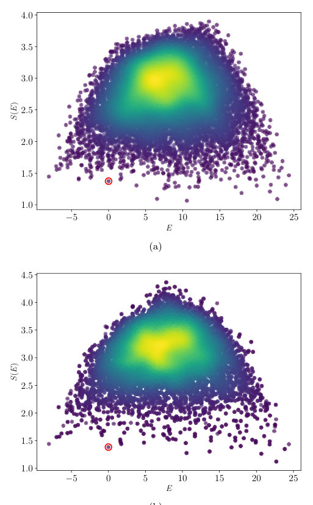
<figcaption class="paper-figure-caption"><b>Fig 1.</b> FIG. 1: Entanglement entropy profile in the correspond- ing sectors with Z2 defect insertion. (a) The profile cor- responding to the sector with a single defect at site j = 7 and (b) the sector with the insertion of two defects (sites, j = 7, 10) on each of the corresponding sub-lattices. In both situations, the scarring is preserved and we are able to identify the single QMBS state at zero-energy, as de- picted in the figure by the red circle. These were ob- tained from the exact diagonalization of the correspond- ing model over a periodic chain of size L = 14 sites. The other parameters of the model were fixed as β = 0.5 and α = 0.3.</figcaption>
</figure>
<figure class="paper-figure-card">
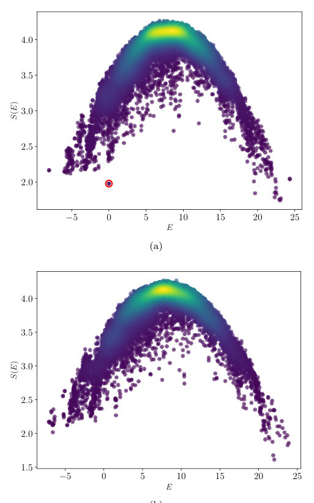
<figcaption class="paper-figure-caption"><b>Fig 2.</b> FIG. 2: Entanglement entropy profile for the scarred 3- chain. (a) The profile corresponding to the sector with zero defects. (b) The profile corresponding to the sec- tor with a single defect at j = 7. Unlike the previous case, inserting a defect for this chain, completely destroy the scarring of the model, as predicted by our analytical analysis. These were obtained from exact diagonaliza- tion of the corresponding model for a periodic chain of size L = 14 sites. The other parameters of the model were fixed as β = 0.5 and α = 0.3.</figcaption>
</figure>
<figure class="paper-figure-card">
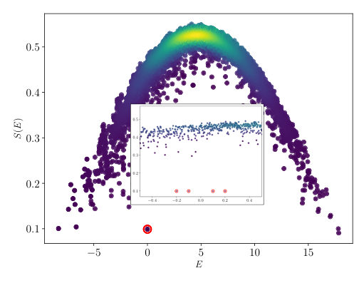
<figcaption class="paper-figure-caption"><b>Fig 3.</b> FIG. 3: Entanglement profile of the 1-chain containing a single duality interface. Due to the anomaly, the QMBS subspace increases from a 2-fold degeneracy to a 4-fold degeneracy, which is now protected by the underlying symmetries. In the inset, we split the states in energy by hand, simply to make explicitly the presence of the four states. These were obtained by means of exact diagonal- ization of an open chain of L = 14 sites. The parameters were fixed as β = 0.5 and α = 0.3.</figcaption>
</figure>
<figure class="paper-figure-card">
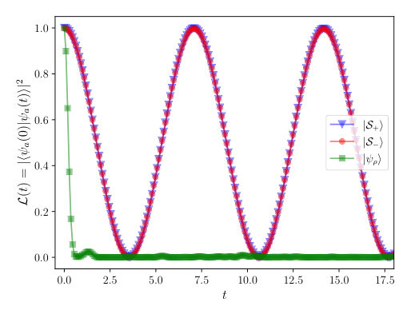
<figcaption class="paper-figure-caption"><b>Fig 4.</b> FIG. 4: Loschmidt echo of the scar states compared with a generic high-energy volume-law state. The strong re- vivals of |S±⟩originate from coherent oscillations within an almost isolated two-level subspace, while a random state in the full Hilbert space state (in green) rapidly loses memory of its initial condition. Exact diagonaliza- tion of a chain with L = 10, α = 0.3, β = 0.3, hz = 0.05.</figcaption>
</figure>
</div>

<p><strong>Summary.</strong> This paper analyzes how Quantum Many-Body Scars persist in structured quantum chains when subjected to symmetry defects or boundary conditions via half-gauging. The core finding is that the underlying symmetries dictate the survival and structure of these non-thermal states, leading to an enlarged, protected subspace. This provides general guidelines for engineering robust quantum phases in higher dimensions.</p>
<p><strong>Why it may be interesting.</strong> The work directly addresses the robustness of topologically or symmetry-protected quantum states against local perturbations (defects) and engineered boundaries (interfaces), which is central to understanding fault-tolerant quantum computation and exotic quantum phases.</p>
<details>
<summary>Detailed structure</summary>
<p><strong>Main problem.</strong> The study investigates the persistence of Quantum Many-Body Scars (QMBS) states when symmetry defects or gauging operations are introduced into the system.</p>
<p><strong>Main result.</strong> The analysis shows that the protected nature of the scars can be maintained, leading to an 'anomalous QMBS subspace' protected by the underlying symmetries, even after complex perturbations.</p>
<p><strong>Method.</strong> The authors employ techniques including defect insertion analysis, duality transformations, and the specialized 'half-gauging' procedure to probe the robustness of the scarred subspace.</p>
<p><strong>Model / system.</strong> The system is modeled by a class of $\alpha$-chains, specifically $k$-chains, governed by a Hamiltonian $H^{(k)}_s$ derived from an embedding mechanism. The analysis compares scars protected by SPT anchors versus symmetry-breaking anchors.</p>
<p><strong>Key observables.</strong> QMBS states (non-thermal eigenstates), protected degeneracies, and the structure of the symmetry algebra generated by the gauging procedure.</p>
<p><strong>Important parameters / regimes.</strong> The chain length $k$, the defect strength $\beta$, and the gauging parameterization.</p>
<p><strong>Assumptions / limitations.</strong> The analysis assumes that the half-gauging procedure successfully recovers a protected, structured subspace, and that the system's behavior can be characterized by its symmetry structure.</p>
<p><strong>Figures summary.</strong> Figure 1 shows the entanglement entropy profile for the $k=2$ chain, illustrating the persistence of scarring under defect introduction.</p>
<p><strong>Paper structure.</strong> The paper progresses by first establishing the scarred model, then analyzing the effect of defect insertion distinguishing between SPT and symmetry-breaking anchors, and finally detailing the core result using half-gauging to reveal interface-protected degeneracies.</p>
</details>
<details>
<summary>Abstract</summary>
<p>We study the interplay between symmetry defects insertion and the phenomena of quantum many body scarring. We exploit a class of models obtained from an embedding mechanism that defines a stochastic matrix form hamiltonian, hosting zero energy many body scarred states. Such models display an interesting playground to explore the consequences of dualities, half-gauging operations and so on. We first show that inside this class of models, what are the conditions to still have scared states after defect insertion. The main result of our work is a detailed analysis of half-gauging in such chains, which introduces a non-trivial interface in our system, leading to scarred states protected by the underlying symmetries. The conclusions for half-gauged scarred systems are general and may lead to fruitful directions for higher dimension scarred physics and their robustness.</p>
</details>
<p><sub><a href="#top">↑ back to top</a></sub></p>

<p><a id="paper-2610.07651"></a></p>
<h3 id="excitation-of-subradiant-states-in-atom-chains-by-surface-plasmon-waves"><a href="http://arxiv.org/abs/2610.07651v1">Excitation of subradiant states in atom chains by surface plasmon waves</a></h3>
<p><strong>Authors:</strong> Giorgio Vimercati, Nicola Piovella<br>
<strong>Type:</strong> theory · <strong>Category:</strong> other · <strong>PDF:</strong> <a href="https://arxiv.org/pdf/2610.07651v1">https://arxiv.org/pdf/2610.07651v1</a><br>
<strong>Analysis basis:</strong> full PDF text, analyzed in chunks
<strong>Topic relevance:</strong> 🔥 <code>correlated / nonlocal dissipation</code> <strong>4/5</strong> · <code>Dicke superradiance</code> <strong>3/5</strong> · <code>Tavis-Cummings &amp; cavity-many-emitter</code> <strong>2/5</strong> · <code>analog quantum simulation</code> <strong>2/5</strong> · <code>driven-dissipative phase transition</code> <strong>2/5</strong> · <code>free-space correlated emission</code> <strong>2/5</strong> · <code>interference shaping light</code> <strong>2/5</strong> · <code>methods for driven-dissipative</code> <strong>2/5</strong> · <code>Keldysh / 2PI / non-Gaussian methods</code> <strong>1/5</strong> · <code>non-equilibrium universality</code> <strong>1/5</strong> · <code>quantum measurements</code> <strong>1/5</strong> · <code>superradiant laser</code> <strong>1/5</strong></p>
<div class="figure-strip-hint">↔ Scroll figures horizontally</div>
<div class="paper-figures-scroll">
<figure class="paper-figure-card">
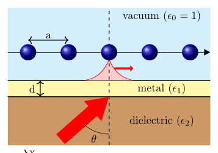
<figcaption class="paper-figure-caption"><b>Fig 1.</b> FIG. 1. Setup: The setup consists of a three-layered struc- ture in Kretschmann configuration and an atom chain placed in the vacuum near the metallic surface. At a specific angle, an incidence laser on the dielectric can resonantly excite a SP wave propagating in the x−direction and confined at the interface between the metal and the vacuum.</figcaption>
</figure>
<figure class="paper-figure-card">
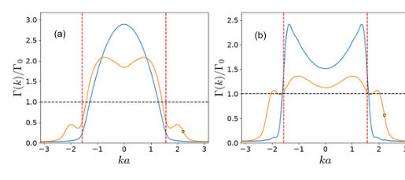
<figcaption class="paper-figure-caption"><b>Fig 2.</b> FIG. 2. Γ(k)/Γ0 vs. ka for a chain of N = 20 atoms in free- space (blue line) and at a distance h = λ0/π from the surface (yellow line). (a): dipoles parallel to the surface. (b): dipoles orthogonal to the surface. The horizontal dashed black line corresponds to the single-atom decay rate in free-space, while the two vertical dashed red lines are the states with k = ±k0.</figcaption>
</figure>
<figure class="paper-figure-card">
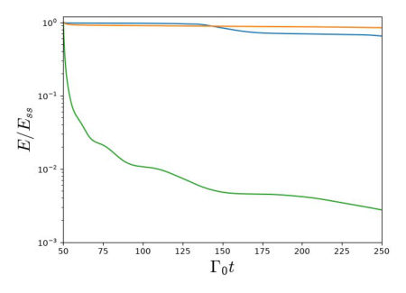
<figcaption class="paper-figure-caption"><b>Fig 3.</b> FIG. 4. Free evolution of the normalized mean excitation probability E/Ess for the three cases of Fig.9, after that the laser is switched off at Γ0t = 50.</figcaption>
</figure>
<figure class="paper-figure-card">
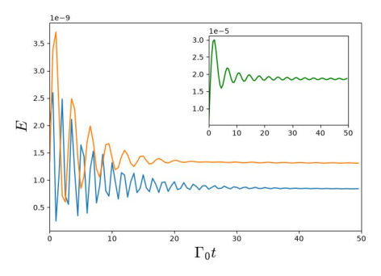
<figcaption class="paper-figure-caption"><b>Fig 4.</b> FIG. 3. Evolution of the mean excitation probability E under SP driving for N = 100 atoms for parallel (blue line) and perpendicular (yellow line) dipole orientations to the surface. The SP wave is generated by a weak (Ω0 = dE0/ℏ= 0.1Γ0) and far-detuned (∆= 10Γ0) laser. The metal has ϵ1 = −2 + 0.1 i and thickness d = 100 nm, and the atom chain is at a distance h = λ0/π from the surface. The inset shows the results for the chain driven in free space by a laser with the same Ω0.</figcaption>
</figure>
<figure class="paper-figure-card">
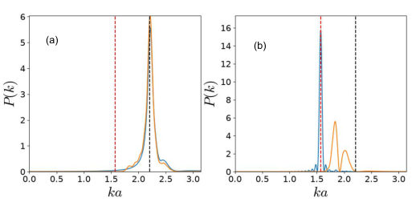
<figcaption class="paper-figure-caption"><b>Fig 5.</b> FIG. 5. Distribution of the excitation in the momentum space at Γ0t = 50 (blue line) and at Γ0t = 100 (yellow line) for SP driving (a) and for direct laser driving (b). The red dashed line represents the mode with k = k0 and in black the one with k = kx.</figcaption>
</figure>
</div>

<p><strong>Summary.</strong> This paper proposes using surface plasmon waves to overcome the experimental difficulty of exciting specific subradiant states in atomic chains. By coupling the atoms to the SP field, the authors demonstrate a method to efficiently load and store quantum excitations into these long-lived modes. This makes the atomic chain a viable platform for future quantum memory applications.</p>
<p><strong>Why it may be interesting.</strong> This work directly addresses quantum memory and light-matter interaction in structured environments, which is central to quantum optics and open quantum systems research. The use of plasmonics to engineer collective atomic states is a key modern topic.</p>
<details>
<summary>Detailed structure</summary>
<p><strong>Main problem.</strong> The paper addresses the challenge of selectively exciting and controlling subradiant states in finite atomic chains, which is difficult to achieve using free-space excitation methods.</p>
<p><strong>Main result.</strong> Coupling the atomic chain to a surface plasmon (SP) wave allows for the controlled loading, storage, and release of excitations into specific subradiant modes, making the system a promising quantum memory.</p>
<p><strong>Method.</strong> The authors model the system using a coupled-dipole approach, incorporating the interaction with the SP wave via modified Green's functions derived from electromagnetic theory.</p>
<p><strong>Model / system.</strong> The physical system is a 1D chain of two-level atoms placed near a metallic film surface (Kretschmann configuration). The dynamics are governed by a coupled-dipole model that includes both free-space and surface-mediated interactions.</p>
<p><strong>Key observables.</strong> Cooperative decay rate spectrum $\Gamma(k)$, steady-state excitation probability $E$, and the coherence time of the stored subradiant state.</p>
<p><strong>Important parameters / regimes.</strong> Chain size ($N$), atomic spacing ($a$), surface/chain distance ($h$), and the properties of the metal (e.g., plasma frequency $\omega_p$, damping $\gamma$).</p>
<p><strong>Assumptions / limitations.</strong> The analysis assumes the system is in the single-excitation manifold and neglects higher-order correlations in the dipole expectation values.</p>
<p><strong>Figures summary.</strong> Figures illustrate the setup (Kretschmann configuration) and compare the decay rate spectrum $\Gamma(k)$ for free space versus near the surface, showing the modification of the mode structure.</p>
<p><strong>Paper structure.</strong> The paper builds from establishing the free-space Hamiltonian and then incorporates the surface interaction via the Green's tensor. It details the SP wave generation using multilayer optics, derives the modified dynamics, and finally analyzes the excitation and decay characteristics.</p>
</details>
<details>
<summary>Abstract</summary>
<p>Subradiant states of a finite subwavelength atomic chain in free space offer a powerful resource for photon storage. Yet their preparation and control remain challenging experimentally. A standard technique is to drive the atoms by a laser and observe the florescence light of the long-lived subradiant modes of excitation after the laser is switched off. However, these modes are highly degenerate and form an almost continuous band in the subradiant manifold. Here we propose a new method of exciting a given subradiant state by coupling atoms to a surface plasmon wave propagating along the interface with a metallic film. By controlling the chain/surface distance we may load, store and release photons in the atoms, making them a promising tool for future quantum memories.</p>
</details>
<p><sub><a href="#top">↑ back to top</a></sub></p>

<p><a id="paper-2610.07921"></a></p>
<h3 id="charging-dicke-and-tavis-cummings-quantum-batteries-with-a-math16math-symmetric-lossy-gain-cavity-pair"><a href="http://arxiv.org/abs/2610.07921v1">Charging Dicke and Tavis--Cummings quantum batteries with a $\mathcal{PT}$-symmetric lossy--gain cavity pair</a></h3>
<p><strong>Authors:</strong> Shiqing Tang, Qing Yu, Ying Li, Cuilu Zhai, Zhao-Hui Peng, Wangjun Lu<br>
<strong>Type:</strong> theory · <strong>Category:</strong> other · <strong>PDF:</strong> <a href="https://arxiv.org/pdf/2610.07921v1">https://arxiv.org/pdf/2610.07921v1</a><br>
<strong>Analysis basis:</strong> full PDF text, analyzed in chunks
<strong>Topic relevance:</strong> 🔥 <code>Tavis-Cummings &amp; cavity-many-emitter</code> <strong>4/5</strong> · 🔥 <code>methods for driven-dissipative</code> <strong>4/5</strong> · <code>Dicke superradiance</code> <strong>3/5</strong> · <code>correlated / nonlocal dissipation</code> <strong>3/5</strong> · <code>driven-dissipative phase transition</code> <strong>3/5</strong> · <code>non-equilibrium universality</code> <strong>2/5</strong> · <code>Keldysh / 2PI / non-Gaussian methods</code> <strong>1/5</strong> · <code>analog quantum simulation</code> <strong>1/5</strong> · <code>quantum measurements</code> <strong>1/5</strong></p>
<div class="figure-strip-hint">↔ Scroll figures horizontally</div>
<div class="paper-figures-scroll">
<figure class="paper-figure-card">
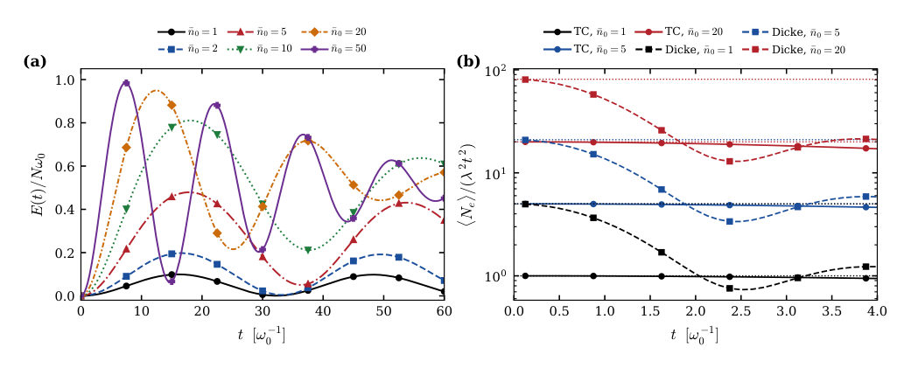
<figcaption class="paper-figure-caption"><b>Fig 1.</b> FIG. 1. (Color online) Isolated batteries, N = 10 atoms, λ = 0.1 ω0, all atoms initially in |j, −j⟩. (a) Stored energy E(t)/Nω0 of the TC model for six coherent reservoirs. Linestyles and markers (identical in all figures): ¯n0 = 1 black solid circles, ¯n0 = 2 blue dashed squares, ¯n0 = 5 red dash-dotted up-triangles, ¯n0 = 10 green dotted down-triangles, ¯n0 = 20 orange short-dash diamonds, ¯n0 = 50 purple solid squares. The peak increases monotonically with ¯n0 and saturates at full inversion. (b) Short-</figcaption>
</figure>
<figure class="paper-figure-card">
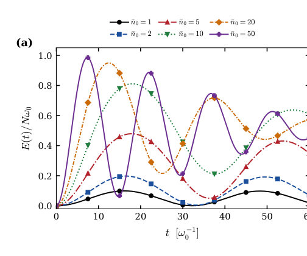
<figcaption class="paper-figure-caption"><b>Fig 2.</b> Figure 1 shows the exact dynamics obtained by diag- onalising ˆH in the truncated Fock basis (nmax = 110, N = 10, λ = 0.1 ω0, T = 120). Panel (a) displays E(t)/(Nω0) for ¯n0 = 1, 2, 5, 10, 20, 50. The envelope of the curves grows monotonically with ¯n0, the peak value saturates at the full-inversion value Nω0, and the time to reach it decreases monotonically from 16.1 ω−1 0 at ¯n0 = 1 to 7.4 ω−1 0 at ¯n0 = 50, in agreement with Eq. (7) (7.0 ω−1 0 at ¯n0 = 50, i.e. within 5%). Panel (b) of Fig. 1 is a direct test of Eqs. (4) and (5):</figcaption>
</figure>
<figure class="paper-figure-card">
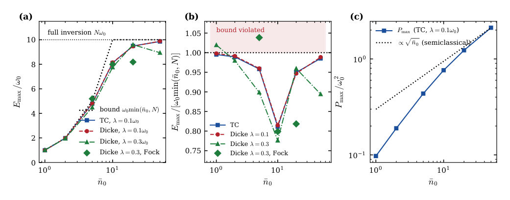
<figcaption class="paper-figure-caption"><b>Fig 3.</b> FIG. 2. (Color online) Summary of Sec. II, same parameters as Fig. 1. (a) Peak stored energy Emax/ω0 versus the initial mean photon number ¯n0 (log axis). Dotted black: the exact TC bound ω0 min(¯n0, N) of Eq. (6). Solid blue squares: TC, λ = 0.1 ω0. Dashed red circles: Dicke, λ = 0.1 ω0. Dash-dotted green up-triangles: Dicke, λ = 0.3 ω0. Green diamonds: Dicke, λ = 0.3 ω0, Fock reservoirs (n = 5, 10, 20). (b) The same data normalised by the bound. The blue and red curves stay at or below 1; the green dash-dotted curve and the green diamond at n = 5 exceed it, showing that the counter-rotating terms break the TC bound at ultrastrong coupling. (c) Peak power Pmax of the TC model (solid blue...</figcaption>
</figure>
<figure class="paper-figure-card">
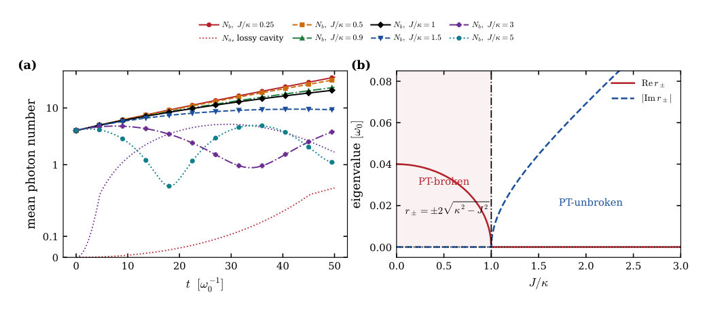
<figcaption class="paper-figure-caption"><b>Fig 4.</b> FIG. 3. (Color online) The PT -symmetric pair alone, γ = 0.04 ω0 (κ = 0.02 ω0), no battery, t ≤50. (a) Mean photon numbers from the exact moment solution. Solid, dashed and dash-dotted lines with markers are the gain cavity Nb for J/κ = 0.25 (red, circles), 0.5 (orange, squares), 0.9 (green, up-triangles), 1 (black, diamonds), 1.5 (purple, down-triangles), 3 (purple, plus) and 5 (teal, circles); the two thin dotted lines are the lossy cavity Na for J/κ = 0.25 and 3. Broken-phase curves grow exponentially; unbroken-phase curves are bounded and oscillatory, and their lossy cavity carries a large population. (b) Nonzero eigenvalues r± of the moment generator, Eq. (12): real part (solid red),...</figcaption>
</figure>
<figure class="paper-figure-card">
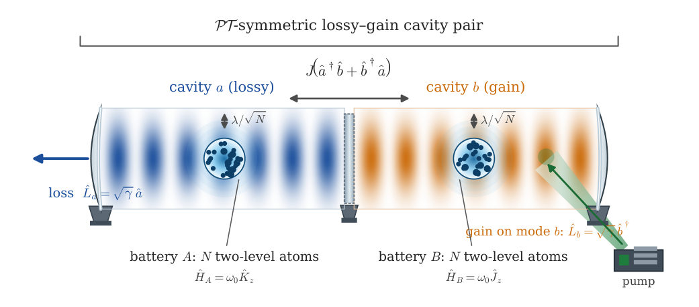
<figcaption class="paper-figure-caption"><b>Fig 5.</b> FIG. 4. (Color online) Model. Two identical cavities are coupled by the beam-splitter interaction of strength J; the left cavity ˆa is lossy with rate γ, the right cavity ˆb is amplifying with the same rate, and together they form a PT -symmetric pair whose exceptional point lies at J = κ = γ/2. An identical battery of N two-level atoms sits in each cavity and couples to its mode with strength λ/ √</figcaption>
</figure>
</div>

<p><strong>Summary.</strong> This paper analyzes how coupling quantum batteries, modeled by Dicke and Tavis-Cummings Hamiltonians, to a $\mathcal{PT}$-symmetric lossy-gain cavity pair affects energy charging. Using advanced numerical techniques, the authors map out distinct charging regimes around the exceptional point, finding that the optimal energy extraction occurs in the broken phase. The results highlight the strong control offered by engineered non-Hermitian environments over quantum energy storage.</p>
<p><strong>Why it may be interesting.</strong> This work directly addresses open quantum systems, cavity QED, and quantum energy storage, providing quantitative insights into how engineered non-Hermitian environments can control energy transfer and extraction efficiency in quantum devices.</p>
<details>
<summary>Detailed structure</summary>
<p><strong>Main problem.</strong> The study investigates how coupling a quantum battery (Dicke or Tavis-Cummings model) to a parity-time ($\mathcal{PT}$)-symmetric lossy-gain photonic environment alters its charging dynamics.</p>
<p><strong>Main result.</strong> The charging dynamics are highly dependent on the spectral regime relative to the exceptional point (EP); the optimal charging point is found in the broken phase, and the counter-rotating terms introduce a reactive oscillation without net work.</p>
<p><strong>Method.</strong> The dynamics are solved by numerically solving the full Lindblad equation using batched Monte-Carlo wave functions, alongside analytical derivations for short-time scaling laws.</p>
<p><strong>Model / system.</strong> The system comprises quantum batteries (Dicke and Tavis-Cummings) coupled to a $\mathcal{PT}$-symmetric cavity pair, which acts as the environment. The dynamics are governed by the Lindblad master equation.</p>
<p><strong>Key observables.</strong> Stored energy, power, and ergotropy gained/lost in the gain-side versus lossy-side battery; excitation number growth; and the location of the exceptional point.</p>
<p><strong>Important parameters / regimes.</strong> The loss rate ($\gamma$), the coupling strength ($J$), and the proximity to the exceptional point (EP) are critical parameters defining the system's behavior.</p>
<p><strong>Assumptions / limitations.</strong> The analysis assumes the batteries are identical to maintain $\mathcal{PT}$ symmetry, and the Tavis-Cummings treatment is deemed sufficient despite the presence of Dicke terms.</p>
<p><strong>Figures summary.</strong> The notes reference figures showing short-time scaling of excitation number, energy bounds for TC and Dicke models, and the dependence of observables on the loss rate relative to the EP.</p>
<p><strong>Paper structure.</strong> The paper is structured by first analyzing isolated batteries (Dicke/TC) charged by a reservoir, then analyzing the cavity pair dynamics to find the EP, and finally coupling the battery to the pair to study charging in both the broken and unbroken phases.</p>
</details>
<details>
<summary>Abstract</summary>
<p>We study how a parity--time-symmetric photonic environment changes the charging of Dicke and Tavis--Cummings quantum batteries. For atoms prepared in the collective ground state the excitation number grows as the square of the charging time, with a coefficient set by the initial mean photon number; the counter-rotating terms of the Dicke model add one to four times that number. Conservation of the total excitation number turns this into an exact ceiling on the stored Tavis--Cummings energy, the transition energy times the smaller of the photon and atom numbers, met numerically to within two per cent, which the Dicke terms overshoot by a few per cent at ultrastrong coupling. We then couple a battery to a lossy--gain pair, keeping the parity--time symmetry intact by putting an identical battery in each cavity; the closed moment system puts the exceptional point at the loss rate. Below it the gain cavity fills and the gain-side battery charges while the lossy-side one stays empty; above it photons are shuttled away and dissipated. Solving the full Lindblad equation with batched Monte--Carlo wave functions, we find that the gain-side battery gains thirty-nine, twenty-six and twenty-eight per cent in stored energy, power and ergotropy in the broken phase and loses sixty-five, thirty-five and sixty-five per cent deep in the unbroken phase, where the lossy-side battery overtakes it. Restoring the counter-rotating terms leaves all of this unchanged within the statistical error; what they add is a reactive oscillation at twice the transition frequency that does no net work but nearly doubles the peak of the instantaneous power. The extra energy is of lower quality, the recoverable fraction dropping from about ninety-eight to ninety per cent. The optimum sits on the broken side, close to but not at the exceptional point.</p>
</details>
<p><sub><a href="#top">↑ back to top</a></sub></p>

<p><a id="paper-2610.07221"></a></p>
<h3 id="open-system-probe-selection-and-optimal-measurements-for-dispersive-coupling-metrology"><a href="http://arxiv.org/abs/2610.07221v1">Open-System Probe Selection and Optimal Measurements for Dispersive Coupling Metrology</a></h3>
<p><strong>Authors:</strong> Achal Vinod, Da-Wei Luo, Ting Yu<br>
<strong>Type:</strong> theory · <strong>Category:</strong> other · <strong>PDF:</strong> <a href="https://arxiv.org/pdf/2610.07221v1">https://arxiv.org/pdf/2610.07221v1</a><br>
<strong>Analysis basis:</strong> full PDF text, analyzed in chunks
<strong>Topic relevance:</strong> 🔥 <code>quantum measurements</code> <strong>4/5</strong> · <code>Tavis-Cummings &amp; cavity-many-emitter</code> <strong>3/5</strong> · <code>methods for driven-dissipative</code> <strong>3/5</strong> · <code>analog quantum simulation</code> <strong>2/5</strong> · <code>correlated / nonlocal dissipation</code> <strong>2/5</strong> · <code>driven-dissipative phase transition</code> <strong>2/5</strong> · <code>Keldysh / 2PI / non-Gaussian methods</code> <strong>1/5</strong> · <code>non-equilibrium universality</code> <strong>1/5</strong></p>
<div class="figure-strip-hint">↔ Scroll figures horizontally</div>
<div class="paper-figures-scroll">
<figure class="paper-figure-card">
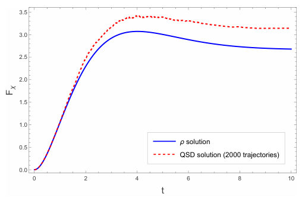
<figcaption class="paper-figure-caption"><b>Fig 1.</b> FIG. 1: Time evolution of the unconditional density- matrix QFI (blue solid curve) and the ensemble-averaged SQFI obtained from QSD simulations with Ntraj = 2000 trajectories (red dashed curve). The density-matrix result is obtained by solving the Markovian Lindblad master equation, and the trajectory simulations use an integration time step ∆t = 0.01. Both curves correspond to the initial state |+, +⟩, with ωc = ωq = 1, Γ = 1, and χ = 0.2.</figcaption>
</figure>
<figure class="paper-figure-card">
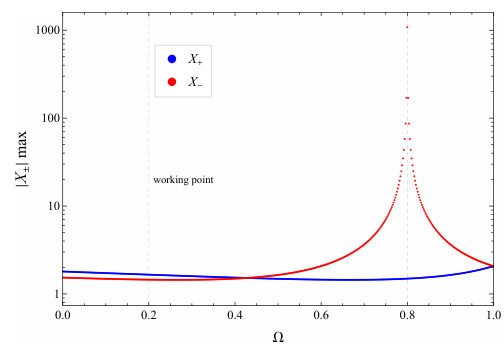
<figcaption class="paper-figure-caption"><b>Fig 2.</b> FIG. 2: Maximum magnitude of the non-Markovian response functions X+(t) and X−(t) over the evolution interval as a function of Ω/Γ, for ωc/Γ = 1, γ/Γ = 0.6, and χ/Γ = 0.2. The X−branch exhibits a sharp pole-like enhancement near Ω/Γ ≃0.8, while X+ remains bounded over the displayed range. The dashed vertical line marks the working point Ω/Γ = 0.2 used in the subsequent numerical calculations.</figcaption>
</figure>
<figure class="paper-figure-card">
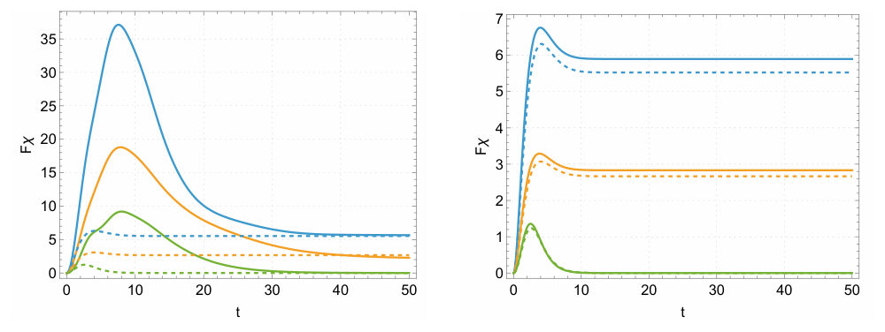
<figcaption class="paper-figure-caption"><b>Fig 3.</b> FIG. 3: Open-system QFI for representative probes. Panel (a) shows the QFI evolution for |1, +⟩(blue), |+, +⟩ (orange), and the entangled state |ψ(7π/20)⟩= cos(7π/20) |0, e⟩+sin(7π/20) |1, g⟩(green), using ωc/Γ = ωq/Γ = 1, γ/Γ = 0.6, Ω/Γ = 0.2, and χ/Γ = 0.2. Solid curves denote non-Markovian evolution and dashed curves denote Markovian evolution. Panel (b) shows the corresponding evolution for the shorter-memory case γ/Γ = 10, with all other parameters unchanged. As γ increases, the non-Markovian curves approach their Markovian counterparts, consistent with the short-memory limit derived in Sec. II C.</figcaption>
</figure>
<figure class="paper-figure-card">
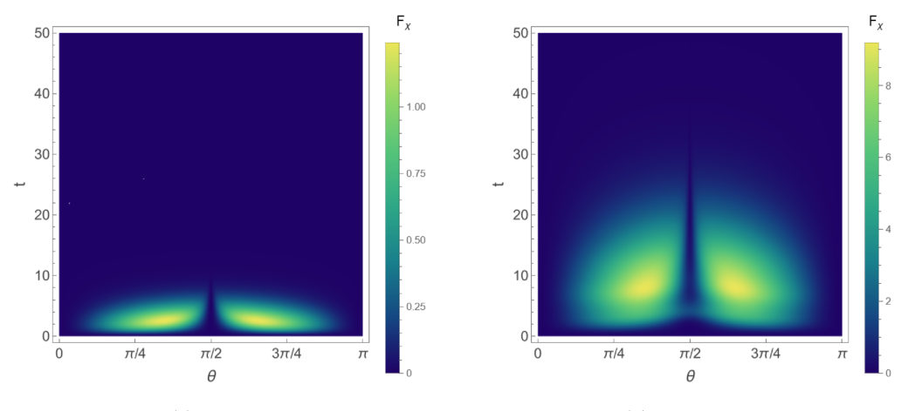
<figcaption class="paper-figure-caption"><b>Fig 4.</b> FIG. 4: QFI for the family |ψ(θ)⟩= cos θ |0, e⟩+sin θ |1, g⟩as a function of θ and evolution time t, for (a) Markovian and (b) non-Markovian dynamics. The reference parameters are ωc/Γ = ωq/Γ = 1, χ/Γ = 0.2, and, in panel (b), γ/Γ = 0.6 and Ω/Γ = 0.2. Both panels span 0 ≤θ ≤π and 0 ≤t ≤50. Markovian sensitivity is concentrated at early times, whereas finite memory substantially extends its persistence. The high-QFI regions lie away from the maximally entangled states at θ = π/4 and 3π/4. Color represents Fχ, with a separate numerical color scale for each panel.</figcaption>
</figure>
<figure class="paper-figure-card">
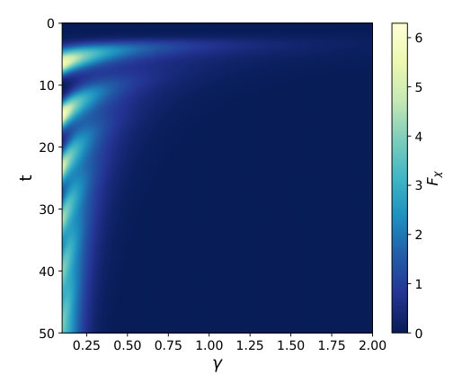
<figcaption class="paper-figure-caption"><b>Fig 5.</b> FIG. 5: Non-Markovian QFI for the initial state |1, g⟩ as a function of inverse bath memory time γ and evo- lution time t; color represents Fχ. Although the closed and Markovian evolutions of this state yield zero QFI, finite environmental memory can activate sensitivity to χ. The scan exhibits appreciable sensitivity and tempo- ral structure for smaller γ, with suppression toward the short-memory side of the displayed range. No monotonic dependence on γ is implied.</figcaption>
</figure>
</div>

<p><strong>Summary.</strong> This paper rigorously analyzes quantum metrology in open cavity-qubit systems to estimate the coupling strength $\chi$. It demonstrates that environmental memory effects are critical, capable of boosting sensitivity beyond what is predicted by the simpler Markovian model. The findings guide the selection of optimal quantum probes and measurement protocols for noisy quantum devices.</p>
<p><strong>Why it may be interesting.</strong> This work provides a detailed theoretical framework for designing quantum sensors in realistic, noisy environments, which is crucial for advancing quantum networking and quantum computation applications utilizing cavity QED systems.</p>
<details>
<summary>Detailed structure</summary>
<p><strong>Main problem.</strong> The paper investigates how photon loss and environmental memory affect the optimal selection of quantum probes and measurement strategies for estimating the dispersive coupling strength in a cavity-qubit system.</p>
<p><strong>Main result.</strong> Finite environmental memory can significantly enhance and prolong the metrological sensitivity, allowing for non-zero Quantum Fisher Information (QFI) even when the Markovian QFI vanishes. Furthermore, separable probes can outperform entangled ones in certain single-photon regimes.</p>
<p><strong>Method.</strong> The analysis employs quantum metrology tools, primarily calculating the Quantum Fisher Information (QFI) using both density-operator and stochastic (trajectory-based) approaches, comparing Markovian and non-Markovian dynamics.</p>
<p><strong>Model / system.</strong> The system is a single bosonic cavity mode dispersively coupled to a two-level qubit, governed by an effective Hamiltonian. The dynamics are analyzed under open-system conditions, ranging from Markovian (Lindblad) to non-Markovian (exponentially correlated bath).</p>
<p><strong>Key observables.</strong> Quantum Fisher Information (QFI), Stochastic QFI (SQFI), and the error propagation uncertainty relative to the Quantum Cramér-Rao Bound (QCRB).</p>
<p><strong>Important parameters / regimes.</strong> Dispersive coupling strength ($\chi$), environmental correlation time ($    au_B$), cavity-qubit detuning ($\Delta$), and mean photon number ($\langle \hat{N} 
angle$).</p>
<p><strong>Assumptions / limitations.</strong> The closed-system analysis provides a benchmark, and the non-Markovian dynamics are modeled using an exponentially correlated Gaussian environment.</p>
<p><strong>Figures summary.</strong> Figures illustrate the time evolution of QFI for different initial states and regimes, showing the comparison between density-matrix QFI and ensemble-averaged SQFI, and mapping out parameter regions where sensitivity is enhanced.</p>
<p><strong>Paper structure.</strong> The paper first establishes the closed-system benchmark using the generator variance. It then transitions to open systems, comparing Markovian and non-Markovian dynamics using QFI diagnostics. The core of the work involves analyzing how environmental memory and probe preparation affect the achievable precision bound.</p>
</details>
<details>
<summary>Abstract</summary>
<p>We investigate how photon loss and environmental memory affect probe selection and measurement sensitivity for estimating the dispersive coupling strength in a cavity qubit system. Using density operator and quantum state diffusion approaches, we examine the quantum Fisher information for representative separable and entangled initial states in Markovian and non Markovian regimes. The results show that closed system generator variance alone does not determine open system performance. The survival of parameter sensitive coherences and the influence of environmental memory also play important roles. Within the single photon preparations examined, a separable probe can outperform the entangled family considered. Comparisons of selected coherent and squeezed vacuum preparations at equal mean photon number further illustrate how photon number statistics and qubit preparation affect sensitivity. For the parameters studied, finite environmental memory can enhance and prolong sensitivity and yield nonzero QFI for a probe whose Markovian QFI vanishes. We also numerically identify a fixed Hermitian observable whose error propagation uncertainty remains close to the quantum Cramer Rao bound over a prescribed coupling interval in the Markovian regime. These findings clarify the interplay between probe preparation, environmental dynamics, and measurement choice in dispersive quantum metrology.</p>
</details>
<p><sub><a href="#top">↑ back to top</a></sub></p>

<p><a id="paper-2610.08667"></a></p>
<h3 id="fault-tolerant-resource-estimation-for-ground-state-preparation-via-lindblad-simulation"><a href="http://arxiv.org/abs/2610.08667v1">Fault-tolerant resource estimation for ground-state preparation via Lindblad simulation</a></h3>
<p><strong>Authors:</strong> Marius Bothe, Patrick Schoepf, Nick S. Blunt<br>
<strong>Type:</strong> theory · <strong>Category:</strong> strongly correlated electrons · <strong>PDF:</strong> <a href="https://arxiv.org/pdf/2610.08667v1">https://arxiv.org/pdf/2610.08667v1</a><br>
<strong>Analysis basis:</strong> full PDF text, analyzed in chunks
<strong>Topic relevance:</strong> 🔥 <code>methods for driven-dissipative</code> <strong>4/5</strong> · <code>analog quantum simulation</code> <strong>3/5</strong> · <code>correlated / nonlocal dissipation</code> <strong>3/5</strong> · <code>Keldysh / 2PI / non-Gaussian methods</code> <strong>2/5</strong> · <code>driven-dissipative phase transition</code> <strong>2/5</strong> · <code>quantum measurements</code> <strong>2/5</strong> · <code>non-equilibrium universality</code> <strong>1/5</strong></p>
<div class="figure-strip-hint">↔ Scroll figures horizontally</div>
<div class="paper-figures-scroll">
<figure class="paper-figure-card">
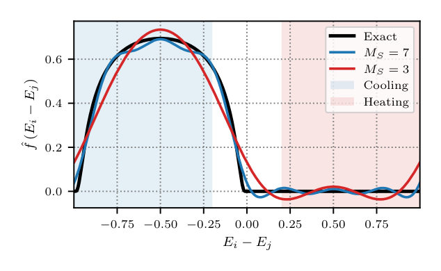
<figcaption class="paper-figure-caption"><b>Fig 1.</b> Figure 1. The energy-domain filter function ˆf as well as its Dirichlet kernel approximations for different numbers of sample points MS. The colored areas begin at the smallest possible energy transitions to and from the ground state, ∆. The blue area indicates transitions that dissipate energy (cooling) and the red area indicates transitions that increase the energy (heating).</figcaption>
</figure>
<figure class="paper-figure-card">
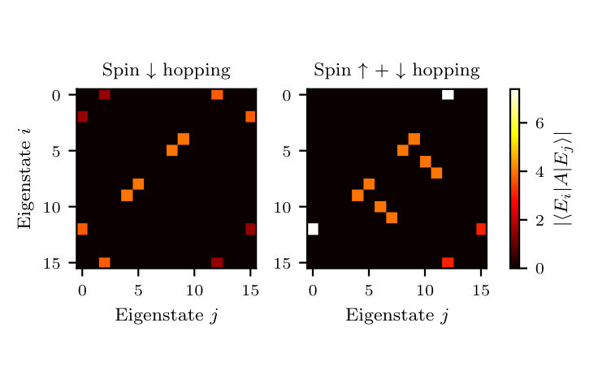
<figcaption class="paper-figure-caption"><b>Fig 2.</b> Figure 2. Comparison of jump operators, A, in the eigenbasis of the 2-site Hubbard Hamiltonian with U = 4 and open boundary conditions. The left operator acts only on the spin-down section, whereas the right operator acts on a linear combination of both. The axis labels indicate the eigenstates in order from lowest to highest energy, such that the top-right triangular matrix contains the desired energy transitions. Note that the two-spin mixer on the right is no longer ergodic in the Sz = 0, 2-particle sector since it is missing the top-left transition.</figcaption>
</figure>
<figure class="paper-figure-card">
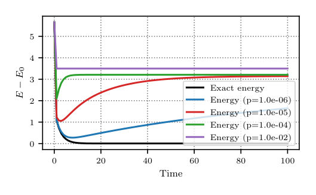
<figcaption class="paper-figure-caption"><b>Fig 3.</b> Figure 3. Energy error relative to the ground-state energy as a function of time, for the 2-site Hubbard model with U = 4, with different levels of amplitude damping noise applied. The system is initialized in a Sz = 0, two-particle state, but drifts into other particle sectors due to the noise, resulting in a different fixed point.</figcaption>
</figure>
<figure class="paper-figure-card">
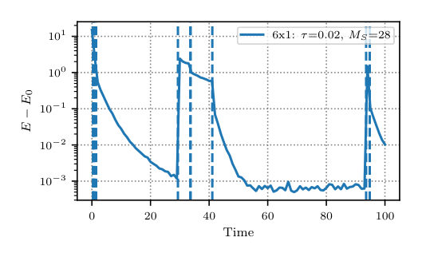
<figcaption class="paper-figure-caption"><b>Fig 4.</b> Figure 4. Example energy trajectory in a state vector simulation for a 6-site one-dimensional Hubbard model with U = 4 and open boundary conditions. Vertical dashed lines indicate jumps, i.e. when the ancilla state was measured in the |1⟩-state.</figcaption>
</figure>
<figure class="paper-figure-card">
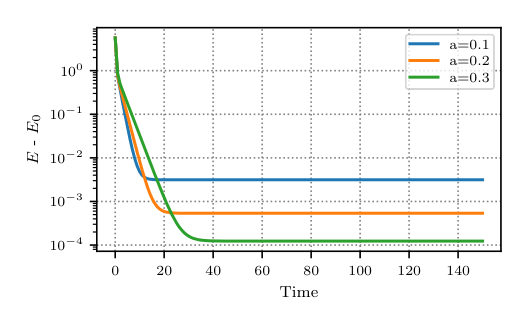
<figcaption class="paper-figure-caption"><b>Fig 5.</b> Figure 5. Energy convergence in the density matrix simulation of the 2-site Hubbard model with U = 4 for different values of the steepness parameter a. Smaller values of a speed up the evolution as they enable more dissipation, but they also increase leakage into higher-energy states.</figcaption>
</figure>
</div>

<p><strong>Summary.</strong> This paper analyzes the resource cost of preparing the ground state of the fermionic Hubbard model using Lindblad simulation techniques. It derives rigorous error bounds by analyzing the approximations involved in simulating the energy-filtering process. The results provide a concrete, albeit large, gate count estimate, highlighting energy transition filtering as the main computational hurdle.</p>
<p><strong>Why it may be interesting.</strong> This work directly addresses the computational bottleneck of simulating complex quantum dynamics (like those in Hubbard models) on near-term quantum hardware by providing quantitative resource estimates for fault-tolerant state preparation.</p>
<details>
<summary>Detailed structure</summary>
<p><strong>Main problem.</strong> The paper investigates the practical resource cost and feasibility of using Lindblad simulation techniques for preparing the ground state of quantum many-body systems in the early fault-tolerant quantum computing regime.</p>
<p><strong>Main result.</strong> The resource estimation for a 36-site fermionic Hubbard model is calculated to be $7.7 	imes 10^8$ T gates for one unit of time evolution, with the primary cost source identified as accurately filtering energy transitions.</p>
<p><strong>Method.</strong> The authors employ a dilation-based simulation approach, deriving rigorous error bounds for the approximation of the Lindblad evolution via quadrature and Trotterization techniques.</p>
<p><strong>Model / system.</strong> The study focuses on the fermionic Hubbard model, a canonical model for strongly correlated electrons, whose dynamics are governed by a Lindblad master equation. The simulation targets preparing the ground state $|\psi_0
angle$ by suppressing energy transitions.</p>
<p><strong>Key observables.</strong> T gate count (resource cost), trace distance error ($\|	ilde{
ho}_{1,s} - ar{
ho}_1\|_1$), spectral gap ($\Delta$), and spectral norm ($\|H\|$).</p>
<p><strong>Important parameters / regimes.</strong> The system size (e.g., 36 sites), the coupling constants ($t_{	ext{hop}}=1, U=4$), and the required time step ($    au$) are key parameters.</p>
<p><strong>Assumptions / limitations.</strong> The analysis relies on approximating the energy-domain filter function integral using finite quadrature and bounding the resulting error terms from both quadrature and Trotterization.</p>
<p><strong>Figures summary.</strong> Figures illustrate the energy-domain filter function $\hat{f}$ and its approximations, and show the scaling of the spectral gap, spectral norm, and required time step ($ au$) with system size.</p>
<p><strong>Paper structure.</strong> The paper progresses by first establishing the theoretical framework for ground-state preparation via Lindblad dynamics, deriving rigorous error bounds for the necessary approximations (quadrature and Trotterization), and finally applying these bounds to estimate the resource cost for the fermionic Hubbard model.</p>
</details>
<details>
<summary>Abstract</summary>
<p>Recent advances in algorithms for simulating Lindblad dynamics have clarified their theoretical potential for state preparation, but their practicality in the early fault-tolerant regime and beyond remains uncertain. In this work, we address this by investigating the cost of preparing ground states of the fermionic Hubbard model, following the single-ancilla approach of [Phys. Rev. Research 6, 033147 (2024)]. We derive rigorous error bounds including constant prefactors, and compare to empirical error behavior and practical convergence parameters obtained from circuit-level simulations. We find that empirically chosen parameters can reduce the required resources by orders of magnitude, resulting in an estimated $7.7 \times 10^8$ T gates to perform one unit of time evolution targeting the low-energy subspace of a 36-site fermionic Hubbard model. We identify the accurate filtering of energy transitions as the main source of this cost.</p>
</details>
<p><sub><a href="#top">↑ back to top</a></sub></p>

<p><a id="paper-2610.07156"></a></p>
<h3 id="chiral-parafermions-in-floquet-math35math-topological-order"><a href="http://arxiv.org/abs/2610.07156v1">Chiral Parafermions in Floquet $\mathbb{Z}_N$ Topological Order</a></h3>
<p><strong>Authors:</strong> Melissa Will, Harald Schmid, Jan Egger, Adam Gammon-Smith, Michael Knap, Frank Pollmann<br>
<strong>Type:</strong> theory · <strong>Category:</strong> strongly correlated electrons · <strong>PDF:</strong> <a href="https://arxiv.org/pdf/2610.07156v1">https://arxiv.org/pdf/2610.07156v1</a><br>
<strong>Analysis basis:</strong> full PDF text, analyzed in chunks
<strong>Topic relevance:</strong> 🔥 <code>driven-dissipative phase transition</code> <strong>4/5</strong> · <code>analog quantum simulation</code> <strong>3/5</strong> · <code>methods for driven-dissipative</code> <strong>3/5</strong> · <code>non-equilibrium universality</code> <strong>3/5</strong> · <code>Keldysh / 2PI / non-Gaussian methods</code> <strong>2/5</strong></p>
<div class="figure-strip-hint">↔ Scroll figures horizontally</div>
<div class="paper-figures-scroll">
<figure class="paper-figure-card">
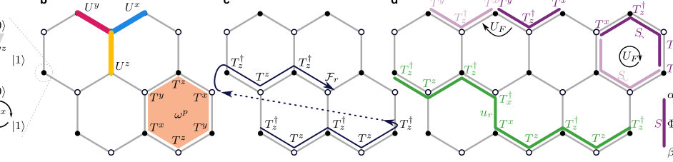
<figcaption class="paper-figure-caption"><b>Fig 1.</b> Figure 1. ZN Floquet Kitaev honeycomb model. a Actions of the clock operators on the local qudit state (illustrated for the Z3 qutrit case). T z is diagonal in the local qudit basis, while T x shifts between the basis states. b The Floquet operator UF = U zU yU x conserves the plaquette fluxes Wp = ωp, p ∈ZN, see Eq. (3). c Schematic Fradkin-Kadanoff-type contour which maps clock operators to constrained operators with parafermionic exchange statistics on distinct sites. d Conserved ZN gauge link ur (green) is associated with z-bonds. Strings of clock operators can be mapped to parafermions (αr, βr′) at the endpoints, connected by a conserved string (Φ). At the edge, strings evolve along...</figcaption>
</figure>
<figure class="paper-figure-card">
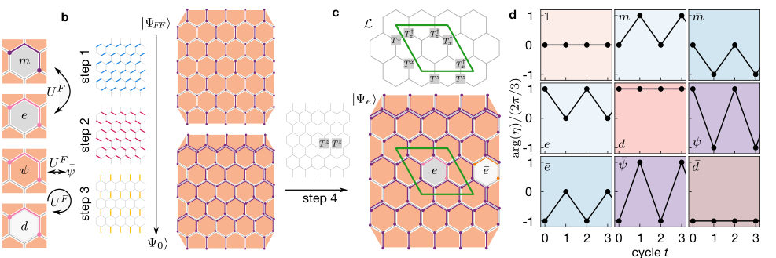
<figcaption class="paper-figure-caption"><b>Fig 2.</b> Figure 2. Z3 Floquet anyon transmutation. a Anyons are labeled by the eigenvalues of the plaquette operator Wp and the half-plaquette string S↷, corresponding to the magnetic flux m and the parafermion ψ, respectively. The Floquet drive exchanges the electric and magnetic anyons, ψ and its antiparticle, and leaves the dyon d invariant. Representative Z3 anyons are shown; antiparticles are omitted. b Protocol for preparing an anyon excitation and probing its Floquet dynamics. The flux-free state (|ΨFF⟩) is transformed into plaquette-diagonal parafermion pairings (|Ψ0⟩). A string of T z operators creates an e-e pair. c Loop operator L encircling the e anyon. The green path indicates the...</figcaption>
</figure>
<figure class="paper-figure-card">
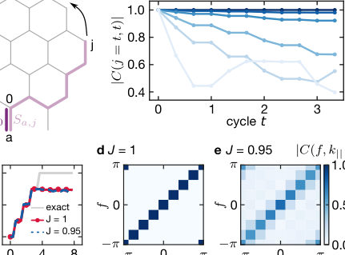
<figcaption class="paper-figure-caption"><b>Fig 3.</b> Figure 3. Chiral parafermionic edge dynamics. a Setup for measuring the edge correlation function using an auxil- iary qudit as a fixed endpoint of the string. b Real space edge correlation function obtained from MPS simulations. At J = 1 the signal remains one, whereas for J &lt; 1 it decays over time. c Maximal entanglement entropy over all biparti- tions along the MPS ordering (Fig. S3c) for J = 1 (red) and J = 0.95 (blue), starting from the stabilizer state shown in Fig. S3d. Gray: exact J = 1 result from the stabilizer simu- lation. d Momentum-frequency space correlation function at J = 1 shows the linearly dispersing chiral edge mode and its winding across the Floquet quasienergy...</figcaption>
</figure>
<figure class="paper-figure-card">
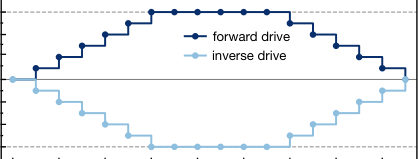
<figcaption class="paper-figure-caption"><b>Fig 4.</b> Figure 4. Chiral mutual information. a Static auxiliary qutrits (square markers) are attached to every second site along the bottom boundary, each initially prepared with the adjacent edge system qutrit in a T zT z pair (lightblue shad- ing). After one Floquet drive the dimer evolves into the blue dashed configuration. The black dashed line partitions the boundary into a left region sL (blue circles) and a right region sR (red circles). b Chiral mutual information I vs. Floquet cycles. The growth of ln √</figcaption>
</figure>
<figure class="paper-figure-card">
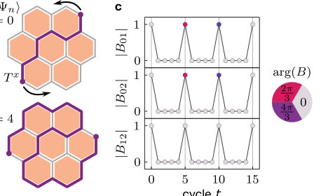
<figcaption class="paper-figure-caption"><b>Fig 5.</b> Figure 5. Edge mode interferometry. a The initial state |Ψn⟩contains a stretched string across the system, whose ends carry a pair of parafermions. Application of a local clock T x</figcaption>
</figure>
</div>

<p><strong>Summary.</strong> This work investigates $\mathbb{Z}_N$ Floquet Topological Order using a driven Kitaev model on qudits. The authors show that the drive generates robust chiral parafermionic edge modes and induces anyonic time crystal behavior in the bulk. This establishes the model as a promising platform for studying non-equilibrium topological physics on quantum processors.</p>
<p><strong>Why it may be interesting.</strong> The focus on Floquet engineering of topological order, particularly using qudits and parafermions, provides a concrete theoretical framework for designing quantum simulators for exotic non-equilibrium phases.</p>
<details>
<summary>Detailed structure</summary>
<p><strong>Main problem.</strong> The paper explores realizing and characterizing $\mathbb{Z}_N$ Floquet Topological Order (FTO) in a non-equilibrium setting, extending beyond the well-studied $\mathbb{Z}_2$ case.</p>
<p><strong>Main result.</strong> They demonstrate that the driven Kitaev model generates chiral parafermionic edge modes and exhibits bulk dynamics characterized by anyonic time crystal behavior.</p>
<p><strong>Method.</strong> The study combines theoretical mapping (Fradkin-Kadanoff-type) with advanced numerical simulations, including Matrix-Product States (MPS) and stabilizer formalisms.</p>
<p><strong>Model / system.</strong> The system is a generalized Kitaev honeycomb model incorporating clock degrees of freedom (qudits), driven periodically by a three-step Floquet drive.</p>
<p><strong>Key observables.</strong> Chiral parafermionic edge modes, dynamical anyon transmutation (tracked by a non-equilibrium loop order parameter), and the radical chiral unitary index quantifying information flow.</p>
<p><strong>Important parameters / regimes.</strong> The system exhibits distinct regimes, notably the 'Clifford point' where the drive simplifies, and the general non-equilibrium dynamics away from this point.</p>
<p><strong>Assumptions / limitations.</strong> The analysis relies on mapping the system to constrained parafermions and uses MPS simulations, which are limited by rapid entanglement growth away from the Clifford point.</p>
<p><strong>Figures summary.</strong> Figures illustrate the action of clock operators, the honeycomb lattice structure, the mapping contour, and the evolution of conserved $\mathbb{Z}_N$ gauge links.</p>
<p><strong>Paper structure.</strong> The paper proceeds by defining the $\mathbb{Z}_N$ FTO model, mapping it to parafermions, analyzing the dynamics of string operators and anyons, and finally simulating the edge and bulk properties in different parameter regimes.</p>
</details>
<details>
<summary>Abstract</summary>
<p>Floquet topological order (FTO) extends topology beyond equilibrium, giving rise to phenomena, such as the dynamical transmutation of anyons. Here, we realize $\mathbb{Z}_N$ FTO in a generalized Kitaev honeycomb model with clock degrees of freedom using a three-step periodic drive. The driven system admits an emergent description in terms of constrained parafermions coupled to conserved $\mathbb{Z}_N$ gauge fields. At the boundary, the drive generates chiral parafermionic Floquet edge modes. We resolve their propagation through correlation functions, characterize their fractional quantum-information transport through the radical chiral unitary index, and use their dynamics to probe exchange statistics. In the bulk, we explore the dynamical anyon transmutation with a non-equilibrium loop order parameter. At a Floquet sweet spot, where the drive becomes Clifford, these phenomena can be accessed using stabilizer simulations. Short-time matrix-product-state simulations away from this point show that the chiral edge response persists at accessible times. Our results establish $\mathbb{Z}_N$ Kitaev models as a setting for exploring intrinsically non-equilibrium topological phenomena on qudit-based quantum processors.</p>
</details>
<p><sub><a href="#top">↑ back to top</a></sub></p>

<p><a id="paper-2610.07143"></a></p>
<h3 id="kardar-parisi-zhang-superdiffusion-in-chaotic-quantum-circuits"><a href="http://arxiv.org/abs/2610.07143v1">Kardar-Parisi-Zhang superdiffusion in chaotic quantum circuits</a></h3>
<p><strong>Authors:</strong> Rustem Sharipov, Urban Duh, Sun Woo P. Kim, Friedrich Hübner<br>
<strong>Type:</strong> both · <strong>Category:</strong> statistical mechanics · <strong>PDF:</strong> <a href="https://arxiv.org/pdf/2610.07143v1">https://arxiv.org/pdf/2610.07143v1</a><br>
<strong>Analysis basis:</strong> full PDF text, analyzed in chunks
<strong>Topic relevance:</strong> 🔥 <code>non-equilibrium universality</code> <strong>4/5</strong> · <code>analog quantum simulation</code> <strong>3/5</strong> · <code>methods for driven-dissipative</code> <strong>3/5</strong> · <code>driven-dissipative phase transition</code> <strong>2/5</strong> · <code>Keldysh / 2PI / non-Gaussian methods</code> <strong>1/5</strong></p>
<div class="figure-strip-hint">↔ Scroll figures horizontally</div>
<div class="paper-figures-scroll">
<figure class="paper-figure-card">
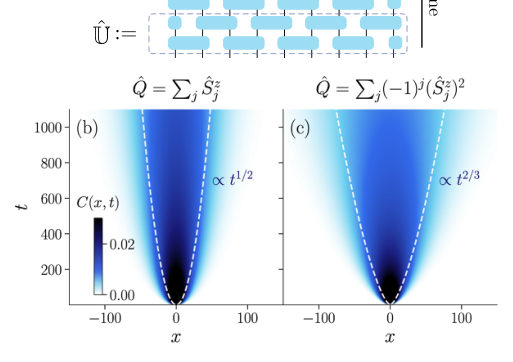
<figcaption class="paper-figure-caption"><b>Fig 1.</b> FIG. 1. Diffusive and superdiffisive spreading of a conserved charge. (a) Setup: Time-evolution ˆU consists of two layers of two- qutrit gates arranged in a brick-wall geometry. The circuit conserves a single conserved quantity satisfying [ ˆQ, ˆU] = 0. (b) For a homo- geneous charge, the charge density correlator C(x, t) spreads diffu- sively as ∼t1/2. (c) For a staggered charge, C(x, t) exhibits KPZ superdiffusion ∼t2/3. The white dashed curves show the location of the half-maximum of C(x, t).</figcaption>
</figure>
<figure class="paper-figure-card">
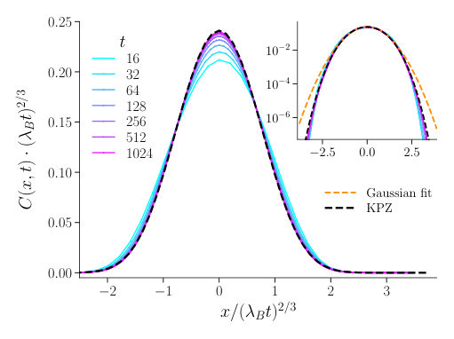
<figcaption class="paper-figure-caption"><b>Fig 2.</b> FIG. 2. KPZ scaling collapse for the staggered conserved charge in the chaotic spin-1 circuit. TEBD results for the connected correlation function C(x, t) = ⟨ˆq(x, t)ˆq(0, 0)⟩c are plotted as (λBt)2/3C(x, t) versus x/(λBt)2/3, with color indicating the evo- lution time. As t increases, the numerical profiles collapse onto the exact stationary KPZ scaling function shown in black dashed line. The normalization c0 = 4/9 and superdiffusion scale λB = 1/ √</figcaption>
</figure>
<figure class="paper-figure-card">
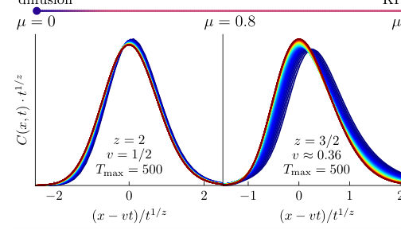
<figcaption class="paper-figure-caption"><b>Fig 3.</b> FIG. 3. Scaling of the charge-correlation profile in the three-site spin- 1</figcaption>
</figure>
<figure class="paper-figure-card">
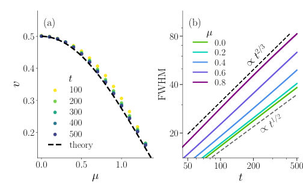
<figcaption class="paper-figure-caption"><b>Fig 4.</b> FIG. 4. Propagation and broadening of the charge-correlation in the three-site qubit circuit. (a) Propagation velocity v as a func- tion of the chemical potential µ, obtained from TEBD simulations with bond dimension χ = 300. Velocities are extracted from linear fits to the peak position over time windows [t −10, t + 10], with color indicating the central time t. The black dashed curve shows the hydrodynamic prediction v(µ) = ȷ′(q(µ)). (b) Log-log scaled plot of broadening of the propagating peak as a function of time for different values of µ estimated with the full width at half maximum (FWHM). Lighter-to-darker curves correspond to increasing bond di- mension χ = 100, 200, and 300. The...</figcaption>
</figure>
<figure class="paper-figure-card">
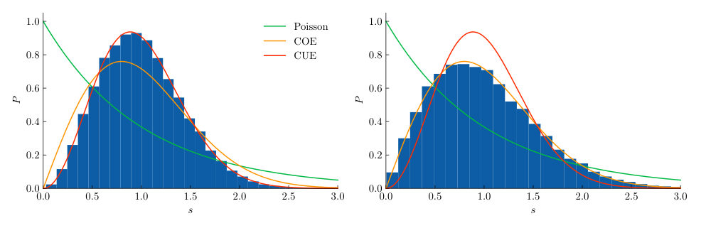
<figcaption class="paper-figure-caption"><b>Fig 5.</b> FIG. 5. Momentum, charge and space-time symmetry resolved level spacing distribution in the spin-1 (S2) case with L = 10 sites (left) and in the spin- 1</figcaption>
</figure>
</div>

<p><strong>Summary.</strong> This work demonstrates that KPZ superdiffusion, a universal non-equilibrium phenomenon, can occur in chaotic quantum circuits without requiring fine-tuning to integrable models. By combining nonlinear hydrodynamics with tensor-network simulations, the authors confirm the predicted $z=3/2$ scaling for charge transport in these artificial quantum systems.</p>
<p><strong>Why it may be interesting.</strong> It provides a concrete, non-integrable quantum platform to observe universal non-equilibrium scaling laws (KPZ), which is highly relevant for understanding energy/charge transport in complex quantum materials.</p>
<details>
<summary>Detailed structure</summary>
<p><strong>Main problem.</strong> The paper investigates the emergence of Kardar-Parisi-Zhang (KPZ) superdiffusion in chaotic quantum circuits, challenging the assumption that such phenomena are limited to integrable models.</p>
<p><strong>Main result.</strong> KPZ superdiffusion with a dynamical exponent $z=3/2$ is demonstrated in chaotic quantum spin chains using discrete time evolution, confirmed by tensor-network simulations.</p>
<p><strong>Method.</strong> The study combines theoretical derivations using Nonlinear Fluctuating Hydrodynamics (NLFHD) with numerical validation via Tensor-Network simulations (TEBD) on quantum circuits.</p>
<p><strong>Model / system.</strong> The system consists of chaotic brickwork quantum circuits, initially modeled with spin-1 (qutrit) and later extended to spin-1/2 (qubit) chains, designed to conserve a staggered charge $\hat{Q}$.</p>
<p><strong>Key observables.</strong> Charge correlation function $C(x, t)$, dynamical exponent $z$, propagation velocity $v$, and the universal scaling form predicted by the KPZ equation.</p>
<p><strong>Important parameters / regimes.</strong> The chemical potential $\mu$ controls the transport regime, and the system dynamics are analyzed in the context of the conserved charge $\hat{Q}$.</p>
<p><strong>Assumptions / limitations.</strong> The analysis relies on the coarse-grained description using local equilibrium approximations and the application of NLFHD to derive scaling laws.</p>
<p><strong>Figures summary.</strong> Figures illustrate the comparison between different spreading regimes (diffusive vs. KPZ) and show the numerical collapse of the charge correlation function onto the predicted stationary KPZ scaling function.</p>
<p><strong>Paper structure.</strong> The paper progresses from establishing the theoretical framework using NLFHD for correlation functions, to applying this framework to specific chaotic quantum circuits (spin-1 and spin-1/2), and finally validating the predictions using advanced tensor-network simulations.</p>
</details>
<details>
<summary>Abstract</summary>
<p>We construct a family of chaotic brickwork quantum circuits exhibiting superdiffusive transport with dynamical exponent $z=3/2$ in the full Kardar--Parisi--Zhang (KPZ) universality class. This is enabled by the equilibrium current associated with a inhomogeneous conserved density having a nontrivial dependence on the chemical potential. Using nonlinear fluctuating hydrodynamics, we derive the propagation velocity, broadening scale, and universal scaling form of the charge correlation function from microscopic equilibrium properties. Tensor-network simulations of a two-site spin-$1$ (qutrit) circuit reproduce these parameter-free predictions, including the full stationary KPZ profile. We further construct a three-site spin-$\frac12$ (qubit) circuit, where transport varies from diffusive to superdiffusive with the chemical potential, while long-lived coherent quasiparticles delay the convergence of the profile to the KPZ scaling form. Our results establish that KPZ superdiffusion in quantum systems is not restricted to fine-tuned integrable models.</p>
</details>
<p><sub><a href="#top">↑ back to top</a></sub></p>

<p><a id="paper-2610.08411"></a></p>
<h3 id="a-3d-printed-ghz-microwave-resonator-paul-trap-for-electron-confinement-and-millisecond-spin-qubit-coherence"><a href="http://arxiv.org/abs/2610.08411v1">A 3D-Printed GHz Microwave-Resonator Paul Trap for Electron Confinement and Millisecond Spin-Qubit Coherence</a></h3>
<p><strong>Authors:</strong> Niklas V. Lausti, Vineet Kumar, Ivan Hudák, Jiří Hajnyš, Peter Kúš, Radek Plašil, Michal Hejduk<br>
<strong>Type:</strong> both · <strong>Category:</strong> other · <strong>PDF:</strong> <a href="https://arxiv.org/pdf/2610.08411v1">https://arxiv.org/pdf/2610.08411v1</a><br>
<strong>Analysis basis:</strong> full PDF text, analyzed in chunks
<strong>Topic relevance:</strong> 🔥 <code>QC/QI experiment</code> <strong>4/5</strong> · <code>analog quantum simulation</code> <strong>2/5</strong> · <code>quantum measurements</code> <strong>2/5</strong> · <code>Keldysh / 2PI / non-Gaussian methods</code> <strong>1/5</strong> · <code>driven-dissipative phase transition</code> <strong>1/5</strong> · <code>methods for driven-dissipative</code> <strong>1/5</strong> · <code>quantum optics experiment</code> <strong>1/5</strong></p>
<div class="figure-strip-hint">↔ Scroll figures horizontally</div>
<div class="paper-figures-scroll">
<figure class="paper-figure-card">
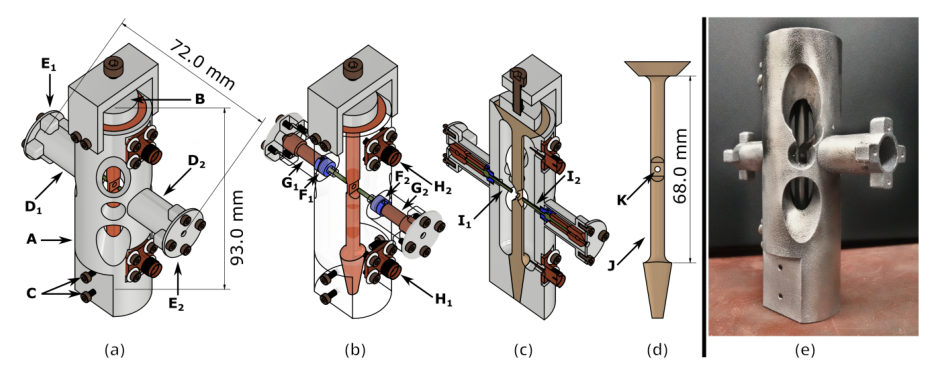
<figcaption class="paper-figure-caption"><b>Fig 1.</b> FIG. 1. Illustration of the EiTEx 3D-printed resonator. a) The complete assembled design shows the cavity (A) housing the resonator rod, which is press-fitted using (B) and can be mounted to the chamber blank flange with screws (C). Perpendicular extensions (D1,2) hold the endcaps, with cover plates (E1,2). b) Internal view showing the resonator rod and opposing endcaps aligned with the rod hole. Ion trapping RF signal is supplied via inline connectors (G1,2), while electron-trapping signals are delivered through connectors (H1,2). c) Ion trapping signal is delivered to endcaps (I1,2). d) Electron trapping signal is coupled to a resonating rod (J), which includes a hole (K) for trapping. e)...</figcaption>
</figure>
<figure class="paper-figure-card">
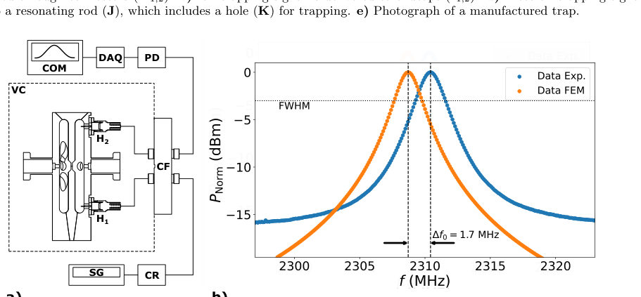
<figcaption class="paper-figure-caption"><b>Fig 2.</b> FIG. 2. a) Experimental scheme for measuring resonance behaviour. The signal generated by programmable signal generator (SG) is fed through a circulator-based isolator (CR) and vacuum feedhthrough on a conflat flange (CF) to a pin of connector H1 situated inside the vacuum chamber (VC) near the node of the oscillating field. The signal in the cavity is measured through the mirrored connector H2 by a power detector (PD) and digitized by a data acquisition board (DAQ). The data are then processed by a computer (COM) running a signal analysis program, which controls the signal generator SG. The models of devices are described in the work by Kumar et al. [16]. b) Comparison of FEM simulated and...</figcaption>
</figure>
<figure class="paper-figure-card">
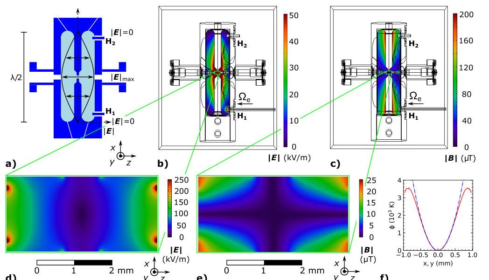
<figcaption class="paper-figure-caption"><b>Fig 3.</b> FIG. 3. Simulated field distribution of the resonator. a) Illustration of resonance mechanism. The endcap electrodes are not depicted for clarity. The fundamental TEM mode (at 2.21 GHz in the case of final assembly) forms a strong, well-confined field along the central axis, excited from the bottom SMA jack. b) The COMSOL simulation result for electric field amplitude confirms the field shape shown in the schematic. c) Simulated distribution for the magnetic field amplitude. Unlike the electric field, its amplitude along the central axis has a minimum in the middle of the resonator. d) and e) are showing details of the distributions in b) and c), respectively. The field ranges are different...</figcaption>
</figure>
<figure class="paper-figure-card">
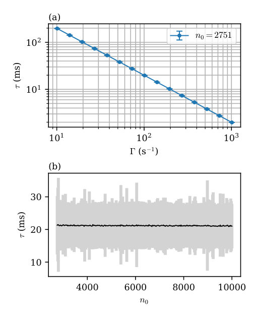
<figcaption class="paper-figure-caption"><b>Fig 4.</b> FIG. 4. Dependence of coherence time τ on heating rate Γ (a) and initial motional excitation n0 (b). The dependence on Γ was evaluated for n0 being 10 times larger than the critical quantum number nc. The size of error bars is smaller than the point size. The dependence on n0 is burdened by large errors caused by the uncertainty of Γ.</figcaption>
</figure>
<figure class="paper-figure-card">
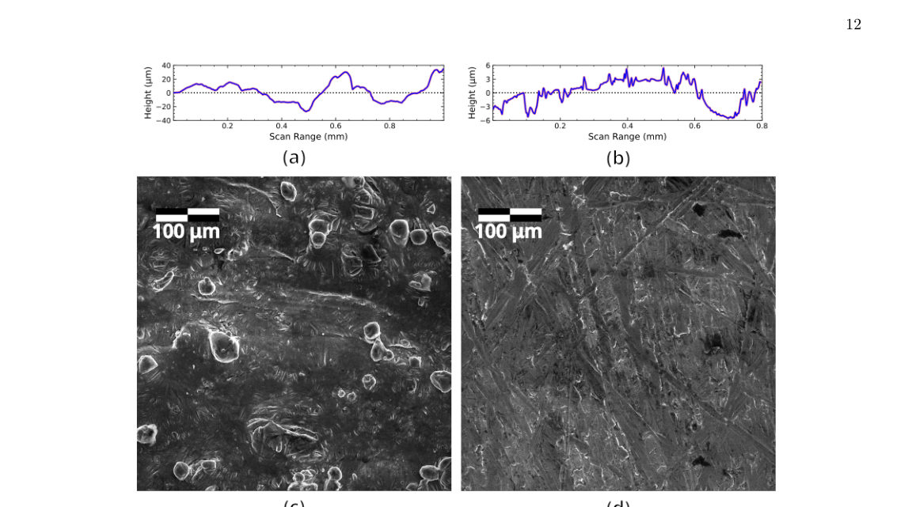
<figcaption class="paper-figure-caption"><b>Fig 5.</b> FIG. 5. Surface characterization of the trap sample. (a) and (b): Surface profilometry profiles over a 1 mm scan length of a sample before and after polishing, respectively. The measured rms surface roughness was Rqu = 14(10) µm for the unpolished surface and Rqp = 2.5(7) µm for the polished one. (c) and (d): SEM image of the samples before and after polishing, respectively. Large structures of the size of tens of µm are effectively removed by polishing.</figcaption>
</figure>
</div>

<p><strong>Summary.</strong> The paper presents a novel, 3D-printed microwave-resonator Paul trap designed for confining electrons at GHz frequencies while preserving optical access. By characterizing the trap's electromagnetic fields and modeling decoherence, the authors predict that the device can achieve electron spin-qubit coherence times of about 10 ms, advancing the feasibility of quantum information processing using trapped electrons.</p>
<p><strong>Why it may be interesting.</strong> This work is highly relevant as it tackles the engineering challenge of integrating high-performance microwave confinement with optical access, a critical bottleneck for scaling up quantum memories based on trapped particles.</p>
<details>
<summary>Detailed structure</summary>
<p><strong>Main problem.</strong> The authors address the challenge of creating a trapping platform that can simultaneously confine electrons using high-frequency microwaves while maintaining an open geometry necessary for optical access and imaging.</p>
<p><strong>Main result.</strong> They report a 3D-printed microwave-resonator Paul trap capable of operating at GHz frequencies, predicting electron spin-qubit coherence times on the order of 10 ms.</p>
<p><strong>Method.</strong> The study combines experimental characterization of the trap's electromagnetic properties (using resonance measurements) with theoretical modeling (FEM and decoherence analysis) to predict qubit performance.</p>
<p><strong>Model / system.</strong> The system is a 3D-printed microwave-resonator Paul trap, which functions as a dual-frequency trap for confining both electrons and ions. The dynamics are modeled using the electron spin Hamiltonian coupled to the motional degrees of freedom, and decoherence is analyzed using master equations.</p>
<p><strong>Key observables.</strong> Resonance frequency (2.3 GHz), Quality Factor ($Q \approx 10^3$ measured), Electron Spin-Qubit Coherence Time ($\sim 10 	ext{ ms}$), Trapping Frequencies ($\omega_x, \omega_y, \omega_z$).</p>
<p><strong>Important parameters / regimes.</strong> GHz operating frequencies, moderate $Q$ factor, surface roughness ($ ext{R}_{qp} \approx 2.5 \mu ext{m}$), and the assumption that motional heating is dominated by Johnson noise.</p>
<p><strong>Assumptions / limitations.</strong> The coherence time prediction assumes motional heating is dominated by Johnson noise, and the analysis relies on the accuracy of the 3D-printed structure's electromagnetic response.</p>
<p><strong>Figures summary.</strong> Figures illustrate the trap design (outer cavity body and central resonator rod) and show surface profilometry/SEM images comparing polished vs. unpolished samples, confirming surface quality.</p>
<p><strong>Paper structure.</strong> The paper details the design and fabrication of the 3D-printed trap, characterizes its electromagnetic response via resonance measurements, models the trapping potential and nonlinear dynamics (Kerr parameter), and finally uses these results to estimate the electron spin-qubit coherence time.</p>
</details>
<details>
<summary>Abstract</summary>
<p>We report a 3D-printed microwave-resonator Paul trap that operates at the GHz frequencies required for electron confinement while preserving an open geometry suitable for laser access and imaging ion Coulomb crystals. The resonator exhibits moderate quality factors of approximately 1000, enabling large confining electric-field amplitudes at low input power, and is in good agreement with finite-element-method (FEM) predictions despite manufacturing imperfections, which we experimentally characterize. The validated FEM model is then used to calculate the electromagnetic fields in the trapping region. These field distributions, together with surface-roughness measurements, are incorporated into a model of electron spin-qubit decoherence to estimate the coherence time. Our analysis predicts that electron spin-qubit coherence times on the order of 10 ms should be achievable under the assumption that motional heating is dominated by Johnson noise, making such systems relevant for quantum information processing. The method of obtaining the coherence time is applicable to any electron Paul trap.</p>
</details>
<p><sub><a href="#top">↑ back to top</a></sub></p>

<p><a id="paper-2610.08269"></a></p>
<h3 id="boosting-the-photon-bunching-of-classical-light-via-a-modified-fabry-perot-cavity"><a href="http://arxiv.org/abs/2610.08269v1">Boosting the photon bunching of classical light via a modified Fabry-Pérot cavity</a></h3>
<p><strong>Authors:</strong> Lu Zhang, Dongxu Zhou, Hongzhi Zhang, Guoquan Zhang<br>
<strong>Type:</strong> experiment · <strong>Category:</strong> other · <strong>PDF:</strong> <a href="https://arxiv.org/pdf/2610.08269v1">https://arxiv.org/pdf/2610.08269v1</a><br>
<strong>Analysis basis:</strong> full PDF text, analyzed in chunks
<strong>Topic relevance:</strong> 🔥 <code>quantum optics experiment</code> <strong>4/5</strong> · <code>interference shaping light</code> <strong>3/5</strong> · <code>Full counting statistics</code> <strong>2/5</strong> · <code>analog quantum simulation</code> <strong>1/5</strong> · <code>methods for driven-dissipative</code> <strong>1/5</strong></p>
<div class="figure-strip-hint">↔ Scroll figures horizontally</div>
<div class="paper-figures-scroll">
<figure class="paper-figure-card">
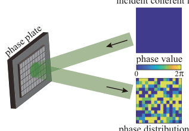
<figcaption class="paper-figure-caption"><b>Fig 1.</b> FIG. 1. A schematic diagram to encode the spatially corre- lated phase structure on the wave front of the light field.</figcaption>
</figure>
<figure class="paper-figure-card">
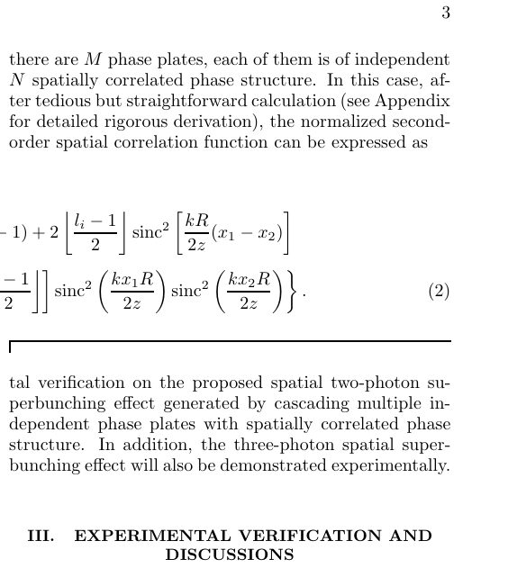
<figcaption class="paper-figure-caption"><b>Fig 2.</b> Figure 3 shows the schematic diagram of the exper- imental setup to modulate the wave front of the light field by a series of independent phase plates cascading in sequence in the longitudinal propagation dimension. Here, a single-mode continuous-wave laser light operat-</figcaption>
</figure>
<figure class="paper-figure-card">
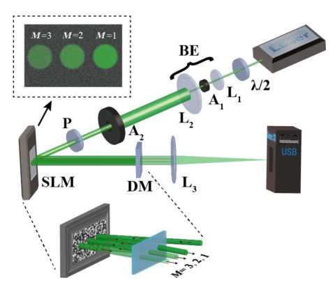
<figcaption class="paper-figure-caption"><b>Fig 3.</b> FIG. 3. Schematic diagram of the experimental setup. λ/2: half-wave plate; L1, L2 and L3: lens with focal length 10 mm, 120 mm and 800 mm, respectively; A1 and A2: iris; BE: beam expender; P: polarizer; SLM: spatial light modulator; DM: dielectric mirror; CCD: charge coupled device. The inset on the up-left corner shows the light spots on the CCD. The bottom inset shows the detail of the cascading phase plates in the modified F-P cavity.</figcaption>
</figure>
<figure class="paper-figure-card">
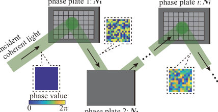
<figcaption class="paper-figure-caption"><b>Fig 4.</b> FIG. 2. Schematic diagram to modulate the wave front of the light field through a series of independent phase plates cascading in the longitudinal propagation direction. The ith phase plate will encode Ni spatially correlated phases on the wave front of the light fields.</figcaption>
</figure>
<figure class="paper-figure-card">
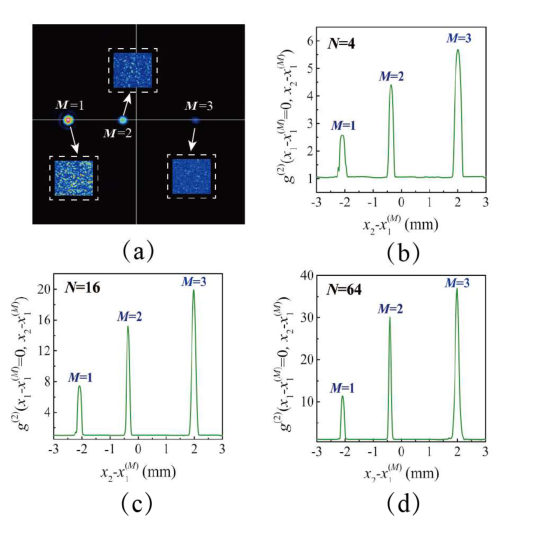
<figcaption class="paper-figure-caption"><b>Fig 5.</b> FIG. 4. (a) The beam spots and the intensity distribution within the beam spots recorded by the CCD camera. (b), (c) and (d) show the normalized second-order spatial correlation functions of the light fields (M = 1, 2, 3) output from the modified F-P cavity with N = 4, 16, 64, respectively. Note that the transverse coordinates are spatially shifted by x(M) 1 .</figcaption>
</figure>
</div>

<p><strong>Summary.</strong> This paper reports on a method to significantly boost the photon bunching of classical light by implementing multiple, spatially correlated phase modulations within a modified Fabry-Pérot cavity. By cascading these modulations, the authors achieved superbunching, demonstrating enhancements in two- and three-photon correlations far exceeding those of standard thermal light. This technique has implications for correlated imaging and nonlinear optics.</p>
<p><strong>Why it may be interesting.</strong> This work provides a novel, controllable method using classical optics (SLMs in an F-P cavity) to engineer super-bunching effects, which is highly relevant for understanding and manipulating photon statistics in quantum optics and quantum information applications.</p>
<details>
<summary>Detailed structure</summary>
<p><strong>Main problem.</strong> The paper aims to boost the photon bunching effect of classical light beyond what is achievable with standard thermal light sources.</p>
<p><strong>Main result.</strong> The authors experimentally demonstrated superbunching, achieving two-photon bunching peaks improved by one order and three-photon peaks improved by three orders of magnitude compared to thermal light.</p>
<p><strong>Method.</strong> The technique involves using a modified Fabry-Pérot cavity where one mirror is replaced by a Spatial Light Modulator (SLM) to cascade multiple independent, spatially correlated phase modulations onto the light wavefront.</p>
<p><strong>Model / system.</strong> The physical system is a modified Fabry-Pérot cavity. The theoretical model describes the normalized second-order and third-order spatial correlation functions, $g^{(2)}$ and $g^{(3)}$, which are shown to accumulate enhancement when multiple phase plates are cascaded.</p>
<p><strong>Key observables.</strong> Two-photon bunching peak ($g^{(2)}$), three-photon bunching peak ($g^{(3)}$), and ghost image visibility.</p>
<p><strong>Important parameters / regimes.</strong> The number of cascaded phase plates ($M$) and the number of independent transverse modulations ($N$) are key parameters determining the enhancement.</p>
<p><strong>Assumptions / limitations.</strong> The analysis relies on the paraxial approximation and the ability to encode multiple indistinguishable two-photon paths via the SLM setup.</p>
<p><strong>Figures summary.</strong> Figures illustrate the schematic setup using the modified F-P cavity (Fig. 2, Fig. 3), show the measured intensity distributions and $g^{(2)}$ for varying $M$ and $N$ (Fig. 4), and plot the measured bunching peaks confirming linear scaling with $M$ (Fig. 5).</p>
<p><strong>Paper structure.</strong> The paper progresses from reviewing the concept of superbunching beyond the HBT effect, deriving the theoretical product structure for $g^{(2)}$ for $M$ plates, and finally presenting experimental measurements of $g^{(2)}$ and $g^{(3)}$ to confirm the enhancement.</p>
</details>
<details>
<summary>Abstract</summary>
<p>We proposed to boost the photon bunching effect of classical light via a modified Fabry-Pérot cavity with one of the cavity mirrors being replaced by a spatial light modulator, through which multiple independent transverse modulations, each was to encode independently spatially correlated phase on the wave front of the light field, was cascaded in sequence in the longitudinal propagation direction in the cavity. The two-photon bunching peak and the three-photon bunching peak of the generated superbunching light field were measured to be $36.9\pm2.0$ and $\rm (2.46\pm0.12)\times10^{3}$, respectively, which, as compared to those of thermal light, were improved by one-order and three-order of magnitude, respectively. Correspondingly, the ghost image visibility reconstructed with the superbunching light was demonstrated experimentally to be improved by $\sim 40$ times as compared to that with the pseudo-thermal light. Such classical superbunching light field is of essential importance not only for fundamental physics but also for potential applications such as correlated imaging, ghost interference and nonlinear optics.</p>
</details>
<p><sub><a href="#top">↑ back to top</a></sub></p>

<p><a id="paper-2610.08025"></a></p>
<h3 id="broadband-telecom-entanglement-from-an-all-fiber-type-0-sagnac-source"><a href="http://arxiv.org/abs/2610.08025v1">Broadband Telecom Entanglement from an All-Fiber Type-0 Sagnac Source</a></h3>
<p><strong>Authors:</strong> Alessandro Cestelli, Spyridon Grountas, Scott Mc Haffie, Jun Gao, Val Zwiller, Ali Elshaari<br>
<strong>Type:</strong> experiment · <strong>Category:</strong> quantum information and computing · <strong>PDF:</strong> <a href="https://arxiv.org/pdf/2610.08025v1">https://arxiv.org/pdf/2610.08025v1</a><br>
<strong>Analysis basis:</strong> full PDF text, analyzed in chunks
<strong>Topic relevance:</strong> 🔥 <code>quantum optics experiment</code> <strong>4/5</strong> · <code>QC/QI experiment</code> <strong>3/5</strong> · <code>interference shaping light</code> <strong>2/5</strong> · <code>quantum measurements</code> <strong>2/5</strong></p>
<div class="figure-strip-hint">↔ Scroll figures horizontally</div>
<div class="paper-figures-scroll">
<figure class="paper-figure-card">
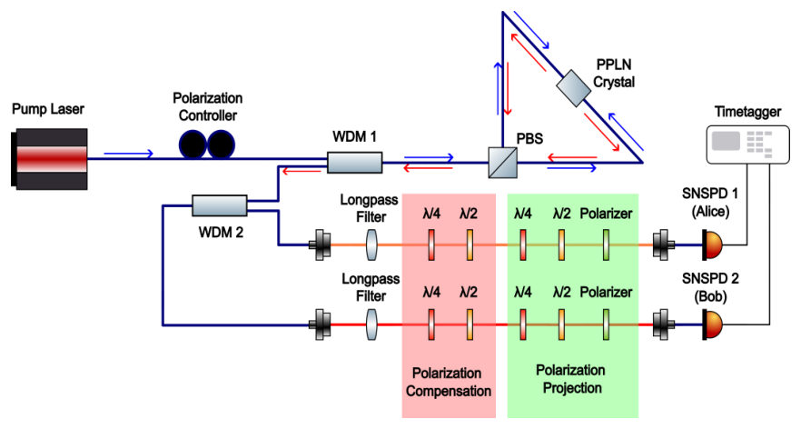
<figcaption class="paper-figure-caption"><b>Fig 1.</b> Figure 1: Schematic of the all-fiber type-0 Sagnac source and polarization-analysis setup. The fiber PBS launches the two pump polarization components in opposite directions through the PPLN waveguide. After recombination, the non-degenerate signal and idler photons are sepa- rated by wavelength-division multiplexing, analyzed independently, and detected by SNSPDs.</figcaption>
</figure>
<figure class="paper-figure-card">
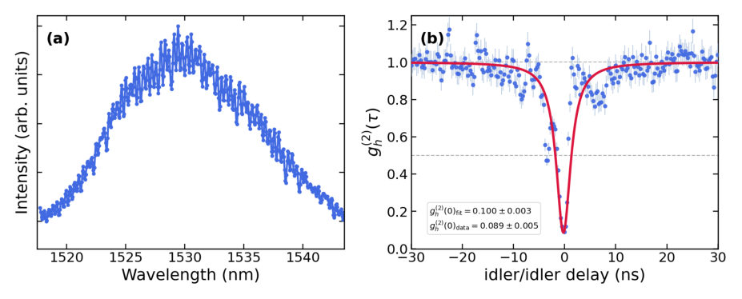
<figcaption class="paper-figure-caption"><b>Fig 2.</b> Figure 2: Basic source characterization. (a) Measured lower-wavelength SPDC sideband; the conjugate long-wavelength band lies outside the available spectrometer range. (b) Heralded second-order correlation versus delay, sampled in 256 ps steps. Error bars show propagated counting uncertainties; the dashed line marks unity. No fit or additional far-delay renormaliza- tion is applied.</figcaption>
</figure>
<figure class="paper-figure-card">
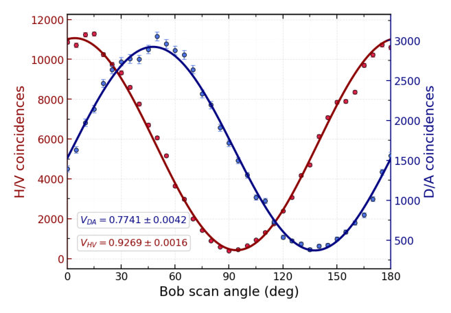
<figcaption class="paper-figure-caption"><b>Fig 3.</b> Figure 3: Measured polarization-correlation fringes in the H/V (red, left axis) and D/A (blue, right axis) bases. Error bars show central Poisson confidence intervals at a nominal 68.27% con- fidence level. Solid lines are sinusoidal fits obtained by Poisson maximum likelihood. Visibilities are calculated from the fitted amplitude-to-offset ratio; the quoted uncertainties represent one standard deviation estimated from 2,000 parametric Poisson-bootstrap resamples and refits. Each point contains 5 s of acquisition. The fit has a 180◦period in the recorded scan coordi- nate; this coordinate is not identified with a calibrated physical half-wave-plate angle.</figcaption>
</figure>
<figure class="paper-figure-card">
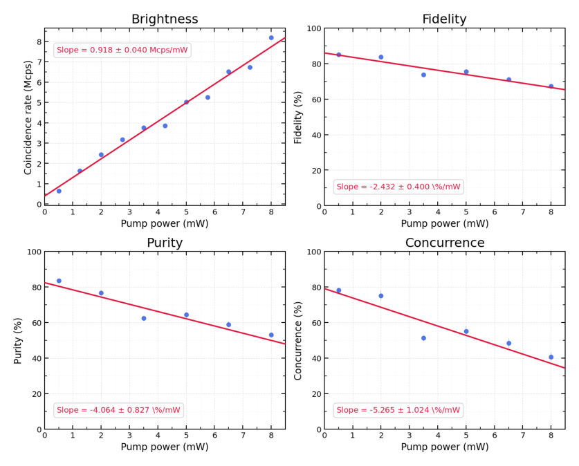
<figcaption class="paper-figure-caption"><b>Fig 4.</b> Figure 4: Pump-power dependence of (a) the corrected pair rate, (b) Bell-state fidelity, (c) purity, and (d) concurrence. The pair rate increases approximately linearly with pump power, while the state quality decreases overall. Error bars in (b)–(d) represent one standard deviation of the reconstructed metrics. Solid lines are linear fits. State-metric slopes are expressed in percentage points per milliwatt.</figcaption>
</figure>
</div>

<p><strong>Summary.</strong> The authors report on an all-fiber, compact source for generating polarization-entangled photon pairs using a Sagnac interferometer and PPLN waveguide. They measured high entanglement quality metrics, confirming the state is suitable for quantum teleportation. The fiber-integrated design makes this source highly practical for real-world quantum network applications.</p>
<p><strong>Why it may be interesting.</strong> This work provides a highly practical, fiber-integrated platform for generating entangled photons, which is a critical resource for quantum communication protocols like teleportation and quantum key distribution.</p>
<details>
<summary>Detailed structure</summary>
<p><strong>Main problem.</strong> The goal was to demonstrate a compact, practical, and affordable source for generating non-degenerate, polarization-entangled photon pairs suitable for quantum communication.</p>
<p><strong>Main result.</strong> The source achieved a Bell-state fidelity of 0.850 and a CHSH value of 2.3301, confirming entanglement sufficient for qubit teleportation above the classical limit.</p>
<p><strong>Method.</strong> The experiment utilized quantum-state tomography and CHSH measurements to characterize the generated entangled state.</p>
<p><strong>Model / system.</strong> The system is an all-fiber Type-0 Sagnac interferometer embedding a periodically poled lithium-niobate (PPLN) waveguide, which generates entangled photon pairs via spontaneous parametric down-conversion (SPDC).</p>
<p><strong>Key observables.</strong> Bell-state fidelity ($F_{\Phi^-}=0.850$), Purity ($P=0.836$), Concurrence ($C=0.782$), and CHSH value ($S=2.3301 \pm 0.0075$).</p>
<p><strong>Important parameters / regimes.</strong> The source operates at 0.5 mW pump power and exhibits a corrected pair-rate slope of $(0.918 \pm 0.040) 	ext{ Mcps } 	ext{mW}^{-1}$.</p>
<p><strong>Assumptions / limitations.</strong> The fidelity is limited by a residual relative-phase offset, suggesting local phase compensation could improve performance to $\approx 0.8865$.</p>
<p><strong>Figures summary.</strong> Figures illustrate the source schematic, the measured broadband SPDC sideband, and polarization correlation fringes measured in H/V and D/A bases.</p>
<p><strong>Paper structure.</strong> The paper details the experimental setup, presents measurements of state metrics (fidelity, concurrence) as a function of pump power, confirms entanglement via CHSH violation, and discusses the practical implications for quantum networking.</p>
</details>
<details>
<summary>Abstract</summary>
<p>We demonstrate a compact, practical all-fiber source of non-degenerate telecom-band polarization-entangled photon pairs assembled from off-the-shelf components. The compact fiber-integrated architecture is designed to be affordable, straightforward to assemble and align, and compatible with existing optical-fiber infrastructure. Photon pairs are generated through type-0 spontaneous parametric down-conversion in a pigtailed periodically poled lithium-niobate waveguide embedded in a Sagnac interferometer. At 0.5 mW pump power, quantum-state tomography yields a Bell-state fidelity $F_{Φ^-}=0.850$, purity $P=0.836$, and concurrence $C=0.782$. A separate CHSH measurement gives $S=2.3301\pm0.0075$. The measured Bell-state fidelity is sufficient for the reconstructed polarization state to support qubit teleportation above the classical fidelity limit under ideal protocol operations. Analysis of the density matrix shows that approximately 96.7% of the population remains in the desired $|HH\rangle$-$|VV\rangle$ subspace, with a normalized coherence of approximately 0.86. A residual relative-phase offset indicates that local phase compensation could increase the Bell-state fidelity to approximately 0.8865. We further characterize the brightness--quality trade-off and obtain a corrected pair-rate slope of $(0.918\pm0.040)$ Mcps mW$^{-1}$. The broadband emission and fiber interfaces offer a route to multiuser entanglement distribution through off-the-shelf multichannel wavelength-division multiplexers with passbands matched to the signal and idler wavelengths.</p>
</details>
<p><sub><a href="#top">↑ back to top</a></sub></p>

<p><a id="paper-2610.07995"></a></p>
<h3 id="a-single-conformal-coordinate-decodes-outcome-resolved-measurement-induced-entanglement"><a href="http://arxiv.org/abs/2610.07995v1">A Single Conformal Coordinate Decodes Outcome-Resolved Measurement-Induced Entanglement</a></h3>
<p><strong>Authors:</strong> Reyhaneh Khasseh, M. A. Rajabpour<br>
<strong>Type:</strong> theory · <strong>Category:</strong> statistical mechanics · <strong>PDF:</strong> <a href="https://arxiv.org/pdf/2610.07995v1">https://arxiv.org/pdf/2610.07995v1</a><br>
<strong>Analysis basis:</strong> full PDF text, analyzed in chunks
<strong>Topic relevance:</strong> 🔥 <code>quantum measurements</code> <strong>4/5</strong> · <code>Full counting statistics</code> <strong>2/5</strong> · <code>methods for driven-dissipative</code> <strong>2/5</strong> · <code>analog quantum simulation</code> <strong>1/5</strong> · <code>non-equilibrium universality</code> <strong>1/5</strong></p>
<div class="figure-strip-hint">↔ Scroll figures horizontally</div>
<div class="paper-figures-scroll">
<figure class="paper-figure-card">
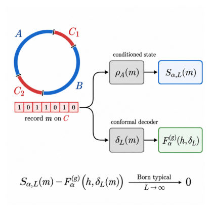
<figcaption class="paper-figure-caption"><b>Fig 1.</b> FIG. 1. Outcome-resolved conformal decoder. A single measurement record m defines two independent routes. Condi- tioning the many-body state gives the outcome-resolved Rényi entropy Sα,L(m), while the measured bits independently de- termine the compact conformal coordinate δL(m) and hence the continuum prediction F (g) α (h, δL). The central result is that these two quantities agree for Born-typical outcomes in the scaling limit.</figcaption>
</figure>
<figure class="paper-figure-card">
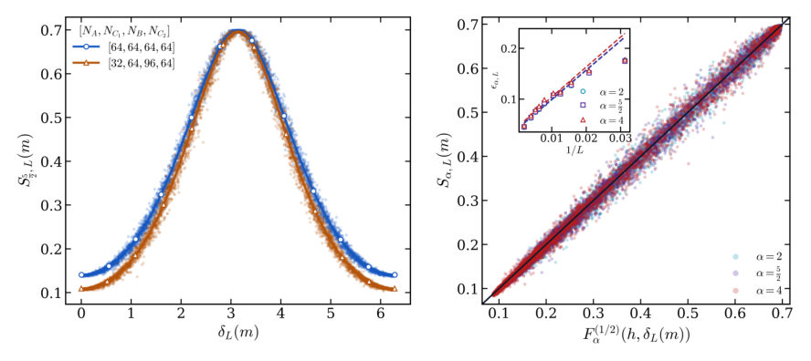
<figcaption class="paper-figure-caption"><b>Fig 2.</b> FIG. 2. Exact XX benchmark of the outcome-resolved decoder. (a) Outcome-resolved entropies at L = 256 and α = 5/2 for two distinct interval geometries. Points are exact lattice results and solid curves are the parameter-free compact-boson predictions. (b) Exact entropy versus continuum prediction for the strongly asymmetric geometry at α = 2, 5/2, 4; the diagonal is equality, not a fit. The inset shows the finite-size convergence of ϵα,L for the same Rényi indices, with dashed lines as large-L fit guides. All numerical data use 5000 exact Born samples per geometry generated by projection-DPP sampling.</figcaption>
</figure>
<figure class="paper-figure-card">

<figcaption class="paper-figure-caption"><b>Fig 3.</b> FIG. 3. ED–MPS comparison for the interacting XXZ chain at L = 20 and ∆= 1/2, for α = 1, 5/2, and 6 (left to right). Open circles show exact ED results, while colored points show MPS results with bond dimension D = 12. Solid curves are the parameter-free compact-boson predictions F (g) α (h, δL) with g = 2/3.</figcaption>
</figure>
<figure class="paper-figure-card">

<figcaption class="paper-figure-caption"><b>Fig 4.</b> FIG. 4. Outcome-resolved decoder in the critical XXZ chain. (a) At L = 64 and α = 5/2, results are shown for ∆= −0.50 and +0.50. Solid curves are the corresponding parameter-free compact-boson predictions obtained from the same δL(m). (b) Qα,L versus anisotropy for several system sizes at α = 5/2. The inset shows ϵα,L versus 1/L at ∆= +0.50 for α = 2, 5/2, 4; dashed lines are finite-size fit guides. All data are obtained from periodic-MPS Born sampling with bond dimension D = 32.</figcaption>
</figure>
<figure class="paper-figure-card">

<figcaption class="paper-figure-caption"><b>Fig 5.</b> FIG. 5. Exact Born sampling at the XX point. Starting from the ground-state correlation matrix, the measured region C = C1 ∪C2 carries the determinantal-point-process (DPP) kernel K = GCC. The measured sites are visited sequentially. At step r, the occupation of the current site jr is drawn from the conditional Bernoulli probability pr = (K(r−1))jrjr, after which the kernel on the retained sites is updated according to Eqs. (I7) and (I8). Here R denotes the sites retained after the current draw: the as-yet-unsampled measured sites together with the unmeasured subsystem D = A ∪B. Thus only one diagonal element of the current kernel is needed to draw the next occupation, while the entire...</figcaption>
</figure>
</div>

<p><strong>Summary.</strong> This work investigates how entanglement in critical quantum chains is affected by local measurements, finding that the resulting entropy is surprisingly simple. The complexity of the measurement outcome space collapses onto a single, universal compact conformal coordinate. This reveals a fundamental Luttinger-liquid mechanism governing post-measurement entanglement.</p>
<p><strong>Why it may be interesting.</strong> It provides a deep, universal connection between local measurement outcomes and global entanglement structure in critical systems, suggesting a powerful, low-dimensional description (a single coordinate) for complex quantum information.</p>
<details>
<summary>Detailed structure</summary>
<p><strong>Main problem.</strong> The paper addresses how much information from a single, outcome-resolved measurement record is necessary to predict the entanglement remaining between two unmeasured regions in a critical many-body state.</p>
<p><strong>Main result.</strong> The universal outcome-resolved Rényi entropy is shown to be asymptotically determined by a single compact conformal coordinate extracted directly from the measurement record, revealing an emergent Luttinger-liquid mechanism.</p>
<p><strong>Method.</strong> The analysis combines theoretical frameworks like compact-boson theory with exact lattice identities (for free-fermion models) and numerical techniques like Matrix Product States (MPS) for interacting chains.</p>
<p><strong>Model / system.</strong> The study focuses on critical quantum chains, specifically the free-fermion XX model and the interacting XXZ model, analyzed using entanglement entropy calculations.</p>
<p><strong>Key observables.</strong> Outcome-resolved Rényi entanglement entropy ($S_{\alpha,L}(m)$), the single compact conformal coordinate ($\delta_L(m)$), and the conditional kernel $G(m)_D$.</p>
<p><strong>Important parameters / regimes.</strong> Rényi index ($\alpha$), system size ($L$), and anisotropy ($\Delta$ for XXZ).</p>
<p><strong>Assumptions / limitations.</strong> The result is shown to hold for Born-typical records in the scaling limit, and some numerical calculations rely on approximations like finite bond dimension in MPS.</p>
<p><strong>Figures summary.</strong> Figures illustrate the 'Outcome-resolved conformal decoder,' comparing exact lattice results to compact-boson predictions for the XX benchmark, and showing the decoder's robustness across different geometries and interaction strengths in the XXZ chain.</p>
<p><strong>Paper structure.</strong> The paper develops the problem by first establishing the connection between the entropy and the conformal coordinate using the XX model (free-fermion), then extends this framework to the interacting XXZ model using MPS, and finally compares these results against continuum predictions derived from compact-boson theory.</p>
</details>
<details>
<summary>Abstract</summary>
<p>A local measurement of a critical many-body state produces exponentially many microscopic outcomes, each defining a different conditioned quantum state. We ask how much information from one such outcome is actually needed to predict the entanglement that remains between two unmeasured regions. We show that, in critical quantum chains, the universal outcome-resolved Rényi entropy is asymptotically determined by a single compact conformal coordinate extracted directly from the measurement record. Compact-boson theory explains this compression: the universal entropy is insensitive to all spatially varying components of the boundary profile, retaining only a single relative compact zero mode. At the free-fermion XX point, exact lattice identities expose the microscopic structure underlying the decoder, while large-scale outcome-by-outcome calculations confirm its scaling prediction across different subsystem geometries and Rényi indices. Numerical calculations in interacting XXZ chains further show that the same microscopic coordinate continues to decode the conditional entropy without interaction-dependent retuning. Thus an exponentially large space of measurement outcomes is reduced, for this universal observable, to a single conformal degree of freedom, revealing an emergent Luttinger-liquid mechanism for outcome-resolved postmeasurement entanglement.</p>
</details>
<p><sub><a href="#top">↑ back to top</a></sub></p>

<p><a id="paper-2610.07794"></a></p>
<h3 id="spontaneous-hawking-radiation-from-dynamical-black-hole-formation-in-quantum-spin-systems"><a href="http://arxiv.org/abs/2610.07794v1">Spontaneous Hawking Radiation from Dynamical Black-Hole Formation in Quantum Spin Systems</a></h3>
<p><strong>Authors:</strong> Shunichiro Kinoshita, Keiju Murata, Daisuke Yamamoto, Ryosuke Yoshii<br>
<strong>Type:</strong> theory · <strong>Category:</strong> statistical mechanics · <strong>PDF:</strong> <a href="https://arxiv.org/pdf/2610.07794v1">https://arxiv.org/pdf/2610.07794v1</a><br>
<strong>Analysis basis:</strong> full PDF text, analyzed in chunks
<strong>Topic relevance:</strong> 🔥 <code>analog quantum simulation</code> <strong>4/5</strong> · <code>Keldysh / 2PI / non-Gaussian methods</code> <strong>3/5</strong> · <code>methods for driven-dissipative</code> <strong>2/5</strong></p>
<div class="figure-strip-hint">↔ Scroll figures horizontally</div>
<div class="paper-figures-scroll">
<figure class="paper-figure-card">

<figcaption class="paper-figure-caption"><b>Fig 1.</b> FIG. 1. (Left) Profile of v(t, x) for ℓ= π, x0 = π/4, and κ = 8/3. (Right) Causal structure of the spacetime describing black hole formation. The shaded region represents a black hole, from which the left boundary (x = 0) cannot be reached.</figcaption>
</figure>
<figure class="paper-figure-card">

<figcaption class="paper-figure-caption"><b>Fig 2.</b> FIG. 2. (Top) Energy density computed in the spin system. Only the flat region x &lt; x0 −ε is shown. The black dashed line indicates the QFT prediction (11). (Bottom) Spatially averaged energy density over the flat region as a function of time for various numbers of sites L; the black dashed line indicates the QFT prediction. The parameters are ℓ= π, x0 = π/4, κ = 2, and ∆t = 2. The number of sites is L = 64 in the top panel and L = 16, 32, 64, and 128 in the bottom panel.</figcaption>
</figure>
<figure class="paper-figure-card">

<figcaption class="paper-figure-caption"><b>Fig 3.</b> FIG. 3. Plateau height of the spatially averaged energy den- sity as a function of κ = 2πTH. The dots show the results for the discrete spin system, while the black dashed line in- dicates the QFT prediction (11). The parameters are ℓ= π, x0 = π/4, and ∆t = 2, with the number of sites L = 16, 32, 64, and 128. The inset shows the same data on a log-log scale after subtracting the constant term π/(48ℓ2) from the QFT prediction.</figcaption>
</figure>
<figure class="paper-figure-card">

<figcaption class="paper-figure-caption"><b>Fig 4.</b> FIG. 2. Energy densities of (a) right-moving modes, (b) left-moving modes, and (c) the total energy density. The horizontal axis represents the spatial coordinate, and only the flat region x &lt; x0 is shown. The black dashed lines indicate the QFT predictions: Eq. (51) for panels (a) and (b), and Eq. (52) for panel (c). Panel (d) shows the norm of ρint j . For reference, Eq. (51) is also shown as a black dashed line. The parameters are set to ℓ= π, x0 = π/4, κ = 2, and ∆t = 2. The system size is fixed at L = 64 in panels (a)–(c), while in panel (d) it is varied as L = 16, 32, 64, 128.</figcaption>
</figure>
<figure class="paper-figure-card">

<figcaption class="paper-figure-caption"><b>Fig 5.</b> FIG. 3. Panels (a)–(d) show the time dependence of the spatially averaged energy density, with (κ, ∆t) = (1, 2), (3, 2), (2, 0), and (2, 1), respectively. Each panel shows curves for system sizes L = 16, 32, 64, 128. Other parameters are set to ℓ= π and x0 = π/4.</figcaption>
</figure>
</div>

<p><strong>Summary.</strong> This work shows that spontaneous Hawking radiation, typically associated with curved spacetime, can be modeled using a local quantum spin system. By calculating the local energy density using spin observables, the authors successfully reproduce the continuum QFT prediction for Hawking radiation. This establishes a powerful, microscopic route for quantum simulation of quantum field theory in curved spacetime.</p>
<p><strong>Why it may be interesting.</strong> It provides a concrete, experimentally accessible many-body observable (local spin expectation value) that directly simulates a fundamental process in quantum gravity (Hawking radiation), bridging condensed matter physics with high-energy theory.</p>
<details>
<summary>Detailed structure</summary>
<p><strong>Main problem.</strong> To demonstrate a microscopic realization of spontaneous Hawking radiation generated by dynamical black-hole formation within a local quantum spin model.</p>
<p><strong>Main result.</strong> The expectation value of a local spin observable quantitatively reproduces the continuum Quantum Field Theory prediction for the energy density associated with Hawking radiation.</p>
<p><strong>Method.</strong> The authors map the QFT problem onto a quantum spin system, calculating the renormalized local energy density using spin observables and comparing it to continuum predictions derived from Bogoliubov mixing.</p>
<p><strong>Model / system.</strong> The system is a local quantum spin model (e.g., related to Majorana fermions) simulating a 2D spacetime geometry evolving from flat to black-hole geometry. The dynamics are governed by a complex spin Hamiltonian.</p>
<p><strong>Key observables.</strong> Renormalized local energy density ($
ho_j(t)$), spatially averaged energy density ($ar{
ho}(t)$), and mode functions ($\phi^-_n,j$).</p>
<p><strong>Important parameters / regimes.</strong> Surface gravity ($\kappa$), system size ($L$), and time window duration (which grows logarithmically with $L$).</p>
<p><strong>Assumptions / limitations.</strong> The agreement between the spin observable and the continuum prediction is limited to a finite time window, signaling the crossover to lattice-cutoff dynamics.</p>
<p><strong>Figures summary.</strong> Figures show the time evolution of the spatially averaged energy density ($ar{
ho}(t)$) plateauing at the QFT prediction, and mode functions exhibiting exponential decay consistent with QFT predictions in the intermediate time regime.</p>
<p><strong>Paper structure.</strong> The paper establishes the theoretical link between Hawking radiation and spin systems, calculates the energy density using local spin observables, and then numerically verifies the agreement with continuum QFT predictions while also analyzing the breakdown of the model at late times.</p>
</details>
<details>
<summary>Abstract</summary>
<p>We show that Hawking radiation spontaneously generated by dynamical black-hole formation can be realized in a local quantum spin model. Starting from the ground state corresponding to the early-time vacuum, with no initially prepared excitations, we follow the dynamics induced by the evolving geometry. In the corresponding continuum quantum field theory, Hawking particle creation is associated with nontrivial Bogoliubov mixing between the in- and out-mode decompositions. We derive the resulting renormalized local energy density in the continuum quantum field theory, which corresponds to an energy-weighted integral of the Hawking spectrum, and identify its counterpart as a local spin observable whose expectation value quantitatively reproduces the continuum prediction, including its dependence on the surface gravity. The agreement persists over a finite time window whose duration grows logarithmically with system size, revealing the crossover from universal continuum Hawking physics to lattice-cutoff dynamics. These results establish a microscopic route to quantum simulation of quantum field theory in curved spacetime, connecting field-theoretic particle creation directly to experimentally accessible many-body observables.</p>
</details>
<p><sub><a href="#top">↑ back to top</a></sub></p>

<p><a id="paper-2610.07393"></a></p>
<h3 id="benchmarking-exchange-only-control-of-a-48-spin-singlet-manifold"><a href="http://arxiv.org/abs/2610.07393v1">Benchmarking exchange-only control of a 48-spin singlet manifold</a></h3>
<p><strong>Authors:</strong> HRL Quantum Team, Microsoft Collaborators, :, Stephen Carr, Matt Abbitt, Michael Abraham, Edwin Acuna, I. Alverado, Carter Andrews, Hussein Anton, Katherine M. Beech, Aaron J. Bluestone, Jacob Z. Blumoff, Matthew G. Borselli, Brydon Boyd, Jacob T. Boyer, Peter Brewer, Steven L. Brown, Joseph D. Broz, Tyler A. Cain, John B. Carpenter, Faustin W. Carter, Brittany Carter, Matthew D. Chambers, James M. Chappell, Kevin C. Chen, Edward H. Chen, Maxwell D. Choi, Matthew N. H. Chow, Justin E. Christensen, Aaron M. Chronister, Andrew M. Clapper, Michael D. Cornelius, Gregory M. Crosswhite, Stanislav Culaclii, Erik S. Daniel, Dominic Daprano, John K. David, Charles R. Elliott, Kevin Eng, Colin P. Feeney, David J. Fialkow, Dylan H. Finestone, Bryan H. Fong, Richie Fu, Zachary A. Geiger, Bradley W. Greene, Rafael Guerra-Fuentes, Hrayr K. Gurgenian, Alex Hamill, Brooke M. Hardesty, Jim W. Harrington, Alex Hirman, Donald A. Hitko, Silas Hoffman, Dominic Holloman, Daniel R. Hulbert, Jake Hundley, Clayton A. C. Jackson, Paul C. Jerger, B. Johnson, Aaron M. Jones, Michael P. Jura, Adour V. Kabakian, Tyler Keating, Joseph Kerckhoff, Andrey A. Kiselev, Patrick W. Krantz, Thaddeus D. Ladd, Sanaaya Lakdawala, Elias Lawson-Fox, Alwina R. Liu, Dwight Luhman, Manny Macias, Theodore K. Macioce, Ryan M. Martin, Daniel S. Matic, Gavin C. Mazur, Ryan McGeehan, Olivia Means, Austin Meyer, Samuel Mumford, Tina Niknejad, Riley P. O'Neil, Andrew Pan, Winston Pouse, Eric M. Prophet, Matthew D. Reed, Marcus Rentie, Alec Roberson, Zechariah Rogers, Golam Sabbir, Spencer Sager, Christopher D. Sanborn, Jonathan Sanchez, Rachel H. Sarmiento, Christian J. Schnaible, Cole Scott, Aaron Smith, Daniel E. Smith, James Soash, Kevin C. Staley, Andrea Su, Bo Sun, Christopher M. Swank, Noah Swimmer, Charles Tahan, Bryan J. Thomas, Yessica Torres, Alan Tran, Ivan Tran, James R. van Meter, Franklin Vartanian, John Samuel Venker, Daniel Volya, Annette L. Wagner, Daniel R. Ward, Aaron J. Weinstein, Abigail L. Wessels, Thomas V. Westrick, Evan T. White, Randall M. White, Parker Williams, Catrina E. Wilson, Courtney P. Wilt, Matthew Wingert, Clifford S. YoungSciortino, Andrew Ziegler<br>
<strong>Type:</strong> experiment · <strong>Category:</strong> quantum information and computing · <strong>PDF:</strong> <a href="https://arxiv.org/pdf/2610.07393v1">https://arxiv.org/pdf/2610.07393v1</a><br>
<strong>Analysis basis:</strong> full PDF text, analyzed in chunks
<strong>Topic relevance:</strong> 🔥 <code>QC/QI experiment</code> <strong>4/5</strong> · <code>analog quantum simulation</code> <strong>3/5</strong> · <code>quantum measurements</code> <strong>1/5</strong></p>
<div class="figure-strip-hint">↔ Scroll figures horizontally</div>
<div class="paper-figures-scroll">
<figure class="paper-figure-card">

<figcaption class="paper-figure-caption"><b>Fig 1.</b> FIG. 1. a Scaling of the quantum Hilbert space size with the number of spins for single-spin qubits, three-spin DFS qubits, and the S = 0 operation mode studied in this work. b Flexibility of exchange-only operation on the qubit chip, with device subgraphs representing 7-qubit DFS, 12-spin S = 0, and 48-spin S = 0 highlighted in various shades of blue. The three measurement sites used in this work are highlighted in red. Particular unused spins and measurement dots were judged more challenging to calibrate due to disorder present in this system. c Example of an exchange program for mirror randomized benchmarking (MRB) executed in the S = 0 operation mode. Exchange angle magnitudes are given...</figcaption>
</figure>
<figure class="paper-figure-card">

<figcaption class="paper-figure-caption"><b>Fig 2.</b> FIG. 2. a Loss in fidelity per exchange, ϵF , for 48-spin benchmarks in the S = 0 operation mode. Parallel XEB experiments, of varying spin counts (color) and subgraphs (shade), are shown alongside a 48-spin MRB experiment, with the spin subgraph used for each data point drawn underneath with a matching color. Uncertainties in the fitted ϵF are all less than 10−5 and have been omitted. b XEB fidelity versus exchange pulse count for a 12-spin XEB experiment, given by the black crosses. The open circles represent the square root of purity, which measures the loss in coherence, such as from averaging over stochastic control errors or environmen- tal decoherence. A simulation that includes the...</figcaption>
</figure>
<figure class="paper-figure-card">

<figcaption class="paper-figure-caption"><b>Fig 3.</b> FIG. 3. a Standard deviation in singlet-return probabilities (σ) across 100 different OTOC-1 sequences on 48 spins, with a π/2 butterfly exchange applied on the left side of the device, as a function of cycle count (1 to 15). b Same as (a) but with a butterfly exchange in the middle of the device.</figcaption>
</figure>
<figure class="paper-figure-card">

<figcaption class="paper-figure-caption"><b>Fig 4.</b> FIG. 4. a Physical locations of the 18 spins used in the OTOC-1 calculation of a Trotterized J1-J2 isotropic 1D Heisenberg spin- chain Hamiltonian. Three different butterfly locations, B1, B2, and B3, are indicated at various distances from the measurement spin pair, which is outlined in red. b Virtual locations of the 18 spins, as well as a depiction of the two spin-coupling terms J1 and J2. Neighboring sites are staggered such that the J1 interaction forms a diagonal truss between neighboring spins, while the J2 interaction forms a vertical connection between next-nearest neighbors. The three butterfly locations now indicate their position on the virtual spin chain. c Diagram of the...</figcaption>
</figure>
<figure class="paper-figure-card">

<figcaption class="paper-figure-caption"><b>Fig 5.</b> FIG. 5. a Standard deviation in singlet-return probability across different random sequences (σ) for 24-spin OTOC-2 as a function of cycle depth in the random unitary U. Experi- ment is shown in dark blue and noiseless simulation in light blue. The root-mean-square error (RMSE) between the mea- sured singlet-return probabilities and those predicted by the simulation can be evaluated in the same units as σ and is shown in orange. The inset shows the 54-spin device with the active 24-spin region in gray, the butterfly location in blue, and the measurement site outlined in red. b Same as (a), but now for 48-spin random OTOC-2 at two different but- terfly sites (blue and purple). In this case,...</figcaption>
</figure>
</div>

<p><strong>Summary.</strong> This work benchmarks quantum computation performance using only exchange interactions on large arrays of electron spins. By measuring performance across the entire accessible Hilbert space, the authors report a very low system-level error rate. This demonstrates a scalable and high-fidelity method for controlling complex quantum many-body systems using solid-state spin qubits.</p>
<p><strong>Why it may be interesting.</strong> It provides a concrete, high-fidelity benchmark for scaling quantum computation using only native, local interactions (exchange), which is highly relevant for solid-state quantum computing architectures.</p>
<details>
<summary>Detailed structure</summary>
<p><strong>Main problem.</strong> The paper benchmarks quantum control using only exchange interactions on a large spin system, aiming to utilize the entire available Hilbert space rather than restricting to smaller, conventionally treated subspaces.</p>
<p><strong>Main result.</strong> The authors achieved an effective system-level error of $3 	imes 10^{-4}$ per exchange, which is reported to be up to an order of magnitude lower than comparable benchmarks on other platforms.</p>
<p><strong>Method.</strong> Performance is assessed using Out-of-Time-Order Correlators (OTOCs) to study scrambling dynamics, and generalized forms of cross-entropy and mirror randomized benchmarking (MRB) to quantify aggregate error.</p>
<p><strong>Model / system.</strong> The system consists of arrays of up to 48 electron spins (quantum dots) whose evolution is governed solely by voltage-controlled spin-spin exchange interactions, operating within the total-spin-zero Hilbert space.</p>
<p><strong>Key observables.</strong> Effective system-level error ($\epsilon_F$), scrambling dynamics (via OTOCs), fidelity, and purity.</p>
<p><strong>Important parameters / regimes.</strong> System size up to 48 spins; total-spin-zero Hilbert space dimension exceeding $2^{40}$; error rate of $3 	imes 10^{-4}$ per exchange.</p>
<p><strong>Assumptions / limitations.</strong> The control relies on $S$-conserving exchange operations, and the approach assumes the ability to measure performance across the full Hilbert space, treating previously 'leakage' states as usable.</p>
<p><strong>Figures summary.</strong> Figures illustrate the scaling of the accessible Hilbert space, schematics of the QPU chip, and benchmarking procedures (XEB, RB, MRB) used to measure error rates.</p>
<p><strong>Paper structure.</strong> The paper introduces the concept of full Hilbert space benchmarking for exchange-only control, details the application to large spin arrays, presents measurements using OTOCs and randomized benchmarking techniques, and concludes with the reported low error rates.</p>
</details>
<details>
<summary>Abstract</summary>
<p>Exchange-only quantum computing benefits from high fidelity and straightforward control afforded by the exchange interaction. However, independently controllable qubits must be encoded into subsystems of at least three electron spins, restricting computation to only a fraction of the available spin Hilbert space. The remaining states are treated as leakage and used only transiently in gate sequences. By contrast, a quantitative, system-wide measure of exchange-only performance can exploit the full available Hilbert space, including states conventionally treated as leakage. Here, we apply this approach to arrays of up to 48 electron spins, accessing a total-spin-zero Hilbert space with dimension exceeding $2^{40}$. Measurements of out-of-time-order correlators (OTOCs) reveal rich scrambling dynamics and demonstrate access to regimes relevant to quantum computational advantage. Using generalized forms of cross-entropy and mirror randomized benchmarking, we also assess the aggregate performance of the full exchange-only system per fundamental two-body interaction: the two-spin exchange. We obtain an effective system-level error of $3 \times 10^{-4}$ per exchange, incorporating the complete experimental control sequence and all associated noise sources. This value is up to an order of magnitude lower than those reported from comparable benchmarks on other platforms at the time of writing.</p>
</details>
<p><sub><a href="#top">↑ back to top</a></sub></p>

<p><a id="paper-2610.08438"></a></p>
<h3 id="harnessing-post-selected-von-neumann-measurements-to-strengthen-entanglement-and-quantum-signatures-in-coherent-states"><a href="http://arxiv.org/abs/2610.08438v1">Harnessing Post-selected von Neumann Measurements to Strengthen Entanglement and Quantum Signatures in Coherent States</a></h3>
<p><strong>Authors:</strong> Janarbek Yuanbek, Zelalem Abebe Bekele, Zhi-qiang Liu<br>
<strong>Type:</strong> theory · <strong>Category:</strong> other · <strong>PDF:</strong> <a href="https://arxiv.org/pdf/2610.08438v1">https://arxiv.org/pdf/2610.08438v1</a><br>
<strong>Analysis basis:</strong> full PDF text, analyzed in chunks
<strong>Topic relevance:</strong> 🔥 <code>quantum measurements</code> <strong>4/5</strong> · <code>Full counting statistics</code> <strong>1/5</strong> · <code>correlated / nonlocal dissipation</code> <strong>1/5</strong></p>
<div class="figure-strip-hint">↔ Scroll figures horizontally</div>
<div class="paper-figures-scroll">
<figure class="paper-figure-card">

<figcaption class="paper-figure-caption"><b>Fig 1.</b> FIG. 1. Schematic of the PVNMs protocol for preparing the conditional pointer state |Φ⟩in mode-a. The system and pointer are initially prepared in the states |ψi⟩and |ϕ⟩, re- spectively, coupled through a weak interaction, and subse- quently post-selected by projecting the system onto the final state |ψf⟩.</figcaption>
</figure>
<figure class="paper-figure-card">

<figcaption class="paper-figure-caption"><b>Fig 2.</b> FIG. 2. Quadrature squeezing parameters Q1 and Q2. (a) and (b) Q1 and Q2 as functions of r for different coupling strengths s, with the WV fixed at θ = 8π/9, (c) and (d) Q1 and Q2 as functions of the coupling strength s for different WVs, with r = 0.1 fixed. Here, δ = µ = 0.</figcaption>
</figure>
<figure class="paper-figure-card">

<figcaption class="paper-figure-caption"><b>Fig 3.</b> FIG. 3. (a) S as functions of r for different coupling strengths s, with the WV fixed at θ = 8π/9, (b) S as functions of the coupling strength s for different WVs, with fixed r = 0.1 . Here, δ = Θ = µ = 0.</figcaption>
</figure>
<figure class="paper-figure-card">

<figcaption class="paper-figure-caption"><b>Fig 4.</b> FIG. 5. Mandel Q factor as functions of r for different cou- pling strengths s, with the WV fixed at θ = 8π/9. Here, δ = µ = 0.</figcaption>
</figure>
<figure class="paper-figure-card">

<figcaption class="paper-figure-caption"><b>Fig 5.</b> FIG. 4. (a) and (b) as g(2) a (0) and g(2) b (0) functions of r for different coupling strengths s, with the WV fixed at θ = 8π/9. Here, δ = µ = 0.</figcaption>
</figure>
</div>

<p><strong>Summary.</strong> This theoretical paper examines how performing post-selected von Neumann measurements alters the quantum characteristics of two-mode entangled coherent states. By analyzing observables like squeezing and photon statistics, the authors demonstrate that this measurement process acts as a tunable mechanism to enhance nonclassicality, confirming post-selection's utility in quantum state engineering.</p>
<p><strong>Why it may be interesting.</strong> This work is highly relevant to quantum optics and open quantum systems, as it explores how measurement back-action (specifically post-selection) can be used as a precise tool to enhance or engineer nonclassical features in continuous-variable quantum states.</p>
<details>
<summary>Detailed structure</summary>
<p><strong>Main problem.</strong> The paper investigates how post-selected von Neumann measurements (PVNMs) modify the nonclassical properties of two-mode entangled coherent states (ECSs). It aims to show that post-selection can be a tunable method for engineering these quantum states.</p>
<p><strong>Main result.</strong> Anomalous weak values, particularly under moderate coupling, enhance key nonclassical features such as squeezing, antibunching, sub-Poissonian statistics, and bipartite entanglement in ECSs.</p>
<p><strong>Method.</strong> The analysis involves calculating the conditional pointer state resulting from PVNMs and characterizing various quantum diagnostics on this state.</p>
<p><strong>Model / system.</strong> The system under study is two-mode entangled coherent states (ECSs), which are non-Gaussian continuous-variable states. The theoretical framework utilizes a measurement interaction Hamiltonian and analyzes the resulting conditional pointer state.</p>
<p><strong>Key observables.</strong> Squeezing ($\Delta^2 F_i$), photon statistics (Mandel Q parameter, $g^{(2)}$), intermode correlations, entanglement (Hillery-Zubairy correlation $E$), and fidelity.</p>
<p><strong>Important parameters / regimes.</strong> Measurement strength parameter $s = g t / \sigma$, and the coupling strength $g$ and time $t$. The analysis covers weak ($s \ll 1$) and strong ($s \gg 1$) coupling regimes.</p>
<p><strong>Assumptions / limitations.</strong> The analysis assumes an ideal von Neumann measurement context where the measurement interaction Hamiltonian dominates the evolution.</p>
<p><strong>Figures summary.</strong> Figure 1 provides a schematic illustrating the protocol for preparing the conditional pointer state $|\Phi
angle$ via PVNMs on one mode.</p>
<p><strong>Paper structure.</strong> The paper systematically builds upon the weak measurement framework, first defining the physical system (ECSs) and the measurement protocol. It then calculates and analyzes multiple nonclassical observables (squeezing, statistics, entanglement) as functions of the measurement strength parameter, culminating in the demonstration of post-selection's engineering capability.</p>
</details>
<details>
<summary>Abstract</summary>
<p>We investigate how post-selected von Neumann measurements modify the nonclassical properties of two-mode entangled coherent states (ECSs). From the conditional pointer state, we characterize squeezing, photon statistics, intermode correlations, entanglement, fidelity, and post-selection probability. Anomalous weak values with moderate coupling enhance squeezing, antibunching, sub-Poissonian statistics, intermode correlations, and bipartite entanglement, while fidelity captures the crossover from weak perturbation to strong distinguishability. These results demonstrate post-selection as a tunable approach to engineering ECSs.</p>
</details>
<p><sub><a href="#top">↑ back to top</a></sub></p>

<p><a id="paper-2610.07568"></a></p>
<h3 id="quantum-darwinism-through-apparatus-mediated-environmental-recording"><a href="http://arxiv.org/abs/2610.07568v1">Quantum Darwinism through apparatus-mediated environmental recording</a></h3>
<p><strong>Authors:</strong> Tran P. H Don, Lan Nguyen Tran, Le Bin Ho<br>
<strong>Type:</strong> theory · <strong>Category:</strong> quantum information and computing · <strong>PDF:</strong> <a href="https://arxiv.org/pdf/2610.07568v1">https://arxiv.org/pdf/2610.07568v1</a><br>
<strong>Analysis basis:</strong> full PDF text, analyzed in chunks
<strong>Topic relevance:</strong> 🔥 <code>quantum measurements</code> <strong>4/5</strong> · <code>correlated / nonlocal dissipation</code> <strong>1/5</strong> · <code>driven-dissipative phase transition</code> <strong>1/5</strong></p>
<div class="figure-strip-hint">↔ Scroll figures horizontally</div>
<div class="paper-figures-scroll">
<figure class="paper-figure-card">

<figcaption class="paper-figure-caption"><b>Fig 1.</b> Low-resolution page preview, page 2</figcaption>
</figure>
<figure class="paper-figure-card">

<figcaption class="paper-figure-caption"><b>Fig 2.</b> Low-resolution page preview, page 3</figcaption>
</figure>
<figure class="paper-figure-card">

<figcaption class="paper-figure-caption"><b>Fig 3.</b> Low-resolution page preview, page 4</figcaption>
</figure>
<figure class="paper-figure-card">

<figcaption class="paper-figure-caption"><b>Fig 4.</b> Low-resolution page preview, page 5</figcaption>
</figure>
<figure class="paper-figure-card">

<figcaption class="paper-figure-caption"><b>Fig 5.</b> Low-resolution page preview, page 6</figcaption>
</figure>
</div>

<p><strong>Summary.</strong> This paper extends Quantum Darwinism by showing that the establishment of redundant environmental records—the basis for classical objectivity—does not require direct system-environment coupling. By modeling an intermediate apparatus, the authors prove that the accessible pointer information remains robust even when the environment interacts only with the apparatus. This clarifies the conditions under which indirect measurements can reliably encode quantum information.</p>
<p><strong>Why it may be interesting.</strong> This work is highly relevant for AMO and open quantum systems as it provides a rigorous, information-theoretic framework for understanding how environmental coupling (or lack thereof) dictates the emergence of classical reality, which is central to decoherence studies.</p>
<details>
<summary>Detailed structure</summary>
<p><strong>Main problem.</strong> The paper investigates how the classical objectivity of quantum systems, described by Quantum Darwinism, can be established through an intermediate measurement apparatus rather than direct system-environment coupling.</p>
<p><strong>Main result.</strong> Theoretically, the apparatus monitoring scheme yields the same accessible pointer information and redundancy as direct system monitoring in the noiseless limit, extending QD to indirect measurements.</p>
<p><strong>Method.</strong> The authors use exact analytical solutions of quantum circuit models and employ quantum information measures like mutual information, Holevo quantity, and quantum discord to compare the two monitoring architectures.</p>
<p><strong>Model / system.</strong> The model compares two architectures: direct system-environment interaction ($S 	o E$) versus indirect apparatus-mediated interaction ($S 	o A 	o E$), using a qubit model for the system, apparatus, and environment.</p>
<p><strong>Key observables.</strong> Mutual Information $I(S:F)$, Holevo quantity $\chi(\Pi_S:F)$, and Quantum Discord $D(\Pi_S:F)$ are key diagnostics for information accessibility and correlation.</p>
<p><strong>Important parameters / regimes.</strong> The analysis depends on the interaction angles ($   heta$) and the noise type (bit-flip, dephasing) and location (apparatus vs. environment).</p>
<p><strong>Assumptions / limitations.</strong> The analysis assumes the system has non-zero entropy ($H(\Pi_S) > 0$) and models the environment interaction using quantum circuit formalism.</p>
<p><strong>Figures summary.</strong> Figures illustrate the two monitoring schemes (direct vs. apparatus-mediated) and compare the impact of different noise channels (bit-flips, dephasing) on the recoverable pointer information and redundancy.</p>
<p><strong>Paper structure.</strong> The paper first establishes the theoretical framework by comparing the two monitoring schemes, then quantifies the information transfer and redundancy using information theory, and finally analyzes the robustness of the recorded information under various noise models.</p>
</details>
<details>
<summary>Abstract</summary>
<p>Quantum Darwinism explains classical objectivity through redundant environmental records of a system's pointer states. We show that these records can be established through an intermediate measurement apparatus without direct system--environment interactions. Using exact analytical solutions of quantum circuit models, we compare system monitoring with apparatus monitoring, where the environment interacts only with the apparatus. During encoding, system--apparatus correlations decrease as system--environment correlations grow. Without noise, both models yield identical accessible pointer information and redundancy, while the discord accounts for their different mutual information. The reliability of these records depends on where noise acts. Apparatus bit flips introduce errors shared by successive records, limiting the information recoverable even from the complete environment. In contrast, larger fragments can mitigate independent noise on environment qubits after encoding. Dephasing in the pointer basis leaves the record information unchanged in the model considered. These results extend the description of quantum Darwinism to indirect measurements and clarify the conditions for reliable environmental records.</p>
</details>
<p><sub><a href="#top">↑ back to top</a></sub></p>

<p><a id="paper-2610.07683"></a></p>
<h3 id="sparse-qubit-operation-in-a-6times6-quantum-dot-array"><a href="http://arxiv.org/abs/2610.07683v1">Sparse qubit operation in a 6$\times$6 quantum dot array</a></h3>
<p><strong>Authors:</strong> Alexader S. Ivlev, Harold L. Co, Damien R. Crielaard, Alice Petrillo, Setareh Kazemzadeh, Giordano Scappucci, Menno Veldhorst<br>
<strong>Type:</strong> experiment · <strong>Category:</strong> quantum information and computing · <strong>PDF:</strong> <a href="https://arxiv.org/pdf/2610.07683v1">https://arxiv.org/pdf/2610.07683v1</a><br>
<strong>Analysis basis:</strong> full PDF text, analyzed in chunks
<strong>Topic relevance:</strong> 🔥 <code>QC/QI experiment</code> <strong>4/5</strong> · <code>quantum measurements</code> <strong>1/5</strong></p>
<div class="figure-strip-hint">↔ Scroll figures horizontally</div>
<div class="paper-figures-scroll">
<figure class="paper-figure-card">

<figcaption class="paper-figure-caption"><b>Fig 1.</b> Figure 1. A 6×6 quantum dot array. a, A false-colour Atomic Force Microscope image of the studied device. Plunger gates and quantum dots are labelled, e.g. P2D. The merged barrier gate Bm is indicated between the plunger gates and at its fanout (see Supplementary Material I for further details on the device). The direction of the nominally in-plane magnetic field B = 25 mT is indicated. b, Schematic of a Spin Evolution Diagram (SED) measurement. A spin is loaded, prepared in a superposition state, and shuttled through the array to probe spatial variations in the g-factor. The accumulated phase is measured using PSB, yielding the example SED as a function of the voltages vP3E-vP4E. c, An...</figcaption>
</figure>
<figure class="paper-figure-card">

<figcaption class="paper-figure-caption"><b>Fig 2.</b> Figure 2. Shuttling-based initialisation at sparse occupation. a, Calibration of tdrive for the return recovery gate Urec,6E-1D at a given microwave phase. tdrive ≈0.9 µs is chosen as it minimises the spin dynamics as a function of the idle time tidle. For further details on the exact calibration, see Supplementary Materials VII. c, For shuttling path QD1C-QD6A a basis-state round-trip fidelity of FRound|↓⟩= 99.4 ± 0.1% is observed. For the superposition state an oscillatory signal as a function of the round trips NRound is observed, as no single-qubit phase corrections are calibrated. Its round-trip fidelity is fitted to FRound|+⟩= 95.7 ± 0.5%. In addition to two recovery gates, this...</figcaption>
</figure>
<figure class="paper-figure-card">

<figcaption class="paper-figure-caption"><b>Fig 3.</b> Figure 3. Sparse single qubit operation. a, Chevron plots of all ten qubits. The microwave driving is performed simul- taneously per row. b, Qubit q2E is more efficiently driven with the top-plunger P2E (blue) than a side-plunger P3E (orange). These plungers are also highlighted in c, where an overview of the Rabi frequencies of q2E (cyan) is given when driving with any plunger. Remaining qubits are greyed out. d, Measuring the relative driving efficiencies of each plunger for the ten qubits, an average driving efficiency is calculated as a function of plunger-qubit distance. The shaded areas give the 95% confidence interval. This average is normalised to the Rabi frequency of each...</figcaption>
</figure>
<figure class="paper-figure-card">

<figcaption class="paper-figure-caption"><b>Fig 4.</b> Figure 4. Two Qubit Operation. a, Schematic of a (decoupled) CZ operation between q4A and q5C. The qubits are shuttled towards each other, at which point the exchange interaction J is controlled and the qubits are separated. To decoupling single qubit dynamics the qubits can be shuttled back halfway for a decoupling pulse. b, Two-qubit exchange interaction is modulated through plunger gate voltages, resulting in the fingerprint plot like this one between the qubits at QD5B and QD5C. A decoupling sequence makes this fingerprint insensitive to g-factor variation. c, Fourier transforms of a superposition state evolution give the qubit spectrum, as a function of symmetric plunger gate voltage µ...</figcaption>
</figure>
<figure class="paper-figure-card">

<figcaption class="paper-figure-caption"><b>Fig 5.</b> Figure 5. RB experiment schematics. a, Schematic of the individual RB experiment, in which only one qubit is subject to the randomised Clifford gates. b, Schematic of the simul- taneous RB sequence in which multiple qubits are simultane- ously subject to their own random Clifford sequence. Even though the native Xπ/2 time is the same for all qubits, each Clifford of the used GX,Y decomposition consists of a varying amount of native gates (see Table I)</figcaption>
</figure>
</div>

<p><strong>Summary.</strong> This paper reports on the realization and characterization of a large, $6 	imes 6$ quantum dot array for quantum computation. By employing coherent spin shuttling, the researchers overcome connectivity limitations, achieving high-fidelity single-qubit control and two-qubit gates between distant qubits. The work demonstrates a promising path toward scalable, solid-state quantum processors.</p>
<p><strong>Why it may be interesting.</strong> This work provides a concrete, scalable solid-state platform for quantum computation, directly addressing the engineering challenge of scaling connectivity beyond simple linear chains, which is a major focus in quantum information theory.</p>
<details>
<summary>Detailed structure</summary>
<p><strong>Main problem.</strong> The primary challenge is achieving scalable, high-connectivity quantum computation using semiconductor spin qubits while overcoming physical limitations like wiring bottlenecks and poor 2D connectivity.</p>
<p><strong>Main result.</strong> The authors successfully demonstrated a $6 	imes 6$ quantum dot array capable of high-fidelity single-qubit control and two-qubit gates via coherent spin shuttling, significantly reducing crosstalk in the process.</p>
<p><strong>Method.</strong> The research employs coherent spin shuttling techniques to position qubits sparsely within a large array, enabling high-fidelity gate operations and state transfer between distant sites.</p>
<p><strong>Model / system.</strong> The platform is a $6 	imes 6$ quantum dot array realized in a semiconductor heterostructure, controlled by shared barrier and individual plunger gates. Qubit operations rely on manipulating electron/hole spins via electric fields and controlled exchange interactions.</p>
<p><strong>Key observables.</strong> Single-qubit Clifford fidelities ($>99\%$), round-trip transfer fidelity ($99.4\%$), crosstalk reduction ($42	imes$), and two-qubit CZ gate fidelities ($\sim 88.6\%$).</p>
<p><strong>Important parameters / regimes.</strong> Shuttling distances up to $5.2 \mu	ext{m}$; exchange interaction ($J$) tunable over orders of magnitude; gate times and detunings are critical parameters.</p>
<p><strong>Assumptions / limitations.</strong> The fidelity is highly sensitive to imperfections in the necessary 'recovery gates' used to compensate for shuttling-induced rotations, which is a major source of error.</p>
<p><strong>Figures summary.</strong> Figures illustrate the $6 	imes 6$ array structure, SED measurements for charge mapping, time-resolved spin paths, and characterization plots for single-qubit and two-qubit gate fidelities.</p>
<p><strong>Paper structure.</strong> The paper progresses from demonstrating basic state preparation and single-qubit control via shuttling, to implementing two-qubit gates (CZ) by bringing qubits into proximity, and finally detailing the complex calibration of the shuttling process itself.</p>
</details>
<details>
<summary>Abstract</summary>
<p>Fault-tolerant quantum computation requires increasing the qubit count while maintaining high performance and connectivity. Semiconductor qubits have demonstrated high-fidelity operation, but growing the system size at sufficient connectivity remains challenging, such that scaling mainly occurred in one spatial direction to preserve access for control lines in the other. Here, we realise an approach that relaxes the requirements on fabrication and demonstrate a 6$\times$6 quantum dot array, defined by a shared barrier gate and individual plunger gates. The quantum dots are tuned through coherent spin shuttling over distances up to 5.2um into a sparse configuration of 10 simultaneously operated qubits, leaving space for shuttling connections. We reduce crosstalk by 42$\times$ in this separated regime, enabling high-fidelity simultaneous single-qubit control, while control-Z operations can be implemented through shuttling and plunger-only control. These results promise high-connectivity quantum circuits, enabled by scaling to two-dimensional geometries and exploiting shuttling.</p>
</details>
<p><sub><a href="#top">↑ back to top</a></sub></p>

<p><a id="paper-2610.07328"></a></p>
<h3 id="advantage-of-entangled-learning-rules-in-quantum-measurement-class-learning"><a href="http://arxiv.org/abs/2610.07328v1">Advantage of Entangled Learning Rules in Quantum Measurement Class Learning</a></h3>
<p><strong>Authors:</strong> Arka Prabha Das, Abram Magner<br>
<strong>Type:</strong> theory · <strong>Category:</strong> quantum information and computing · <strong>PDF:</strong> <a href="https://arxiv.org/pdf/2610.07328v1">https://arxiv.org/pdf/2610.07328v1</a><br>
<strong>Analysis basis:</strong> full PDF text, analyzed in chunks
<strong>Topic relevance:</strong> 🔥 <code>quantum measurements</code> <strong>4/5</strong></p>
<div class="figure-strip-hint">↔ Scroll figures horizontally</div>
<div class="paper-figures-scroll">
<figure class="paper-figure-card">

<figcaption class="paper-figure-caption"><b>Fig 1.</b> Low-resolution page preview, page 2</figcaption>
</figure>
<figure class="paper-figure-card">

<figcaption class="paper-figure-caption"><b>Fig 2.</b> Low-resolution page preview, page 3</figcaption>
</figure>
<figure class="paper-figure-card">

<figcaption class="paper-figure-caption"><b>Fig 3.</b> Low-resolution page preview, page 4</figcaption>
</figure>
<figure class="paper-figure-card">

<figcaption class="paper-figure-caption"><b>Fig 4.</b> Low-resolution page preview, page 5</figcaption>
</figure>
<figure class="paper-figure-card">

<figcaption class="paper-figure-caption"><b>Fig 5.</b> Low-resolution page preview, page 6</figcaption>
</figure>
</div>

<p><strong>Summary.</strong> This paper theoretically analyzes the efficiency of learning quantum measurements by comparing single-copy (separable) measurement rules against optimal entangled rules in a PAC learning setting. It demonstrates that while single-copy rules can fail asymptotically, they are guaranteed to be only polynomially worse than the optimal entangled rules under certain structural assumptions. This sets fundamental complexity bounds for quantum data processing in machine learning.</p>
<p><strong>Why it may be interesting.</strong> This work provides fundamental theoretical limits on how much quantum resources (entanglement) are required in the measurement process to achieve efficient learning, which has implications for quantum machine learning protocols.</p>
<details>
<summary>Detailed structure</summary>
<p><strong>Main problem.</strong> The paper investigates the advantage of using entangled (non-separable) quantum measurements compared to single-copy (separable) measurements in the context of Quantum Measurement PAC learning.</p>
<p><strong>Main result.</strong> It proves that while single-copy learning rules can be asymptotically suboptimal compared to optimal entangled rules, the advantage is bounded by a polynomial factor in the sample complexity setting.</p>
<p><strong>Method.</strong> The analysis uses the Positive Operator-Valued Measure (POVM) framework and compares sample complexities derived from lower bounds (using specific constructions) against upper bounds (using PAC learning theory).</p>
<p><strong>Model / system.</strong> The model involves learning a measurement (POVM) from a hypothesis class $  ext{Hyp}$ acting on quantum states $
ho$ on a Hilbert space $H$. The comparison is between measurements implementable via local operations and classical communication (LOCC) versus general entangled measurements.</p>
<p><strong>Key observables.</strong> Sample complexity ($m_0$), trace distance, diamond distance, and the excess risk ($\Delta R$).</p>
<p><strong>Important parameters / regimes.</strong> The dimension $d$ of the Hilbert space, the error tolerance $\epsilon$, and the failure probability $\delta$.</p>
<p><strong>Assumptions / limitations.</strong> The polynomial advantage bound relies on a natural assumption regarding the coverability of the measurement class by approximately jointly measurable subsets.</p>
<p><strong>Paper structure.</strong> The paper establishes necessary lemmas relating excess risk to distance measures, derives lower bounds on sample complexity for single-copy rules, and finally proves the upper bound showing the polynomial gap between single-copy and optimal learning rules.</p>
</details>
<details>
<summary>Abstract</summary>
<p>Learning with data in the form of quantum states is of current interest and has led to a variety of problems that boil down to interaction with the available data via quantum measurement and classical post-processing of observed classical outcomes. In quantum measurement PAC learning, one is given a sequence of unknown, prepared quantum states and classical labels, along with a hypothesis class of candidate measurements. The task is to select a measurement from the hypothesis class that minimizes a fixed notion of error in prediction of the classical labels via measurement of a new state by the selected hypothesis. In this work, we consider the advantage of interacting with the given data in the measurement learning framework using learning rules given by measurements that cannot be implemented using local operations and classical communication (LOCC), as opposed to single-copy learning rules. We provide a construction showing that there exist learning scenarios wherein single-copy learning rules are asymptotically suboptimal compared to optimal ones. We then show that learning rules based on entangled measurements enjoy at most a polynomial sample complexity advantage over single-copy learning rules in the PAC learning setting (under a natural joint measurability covering assumption).</p>
</details>
<p><sub><a href="#top">↑ back to top</a></sub></p>

<p><a id="paper-2610.07702"></a></p>
<h3 id="demonstration-of-parallel-multi-qpu-execution-for-fragment-based-quantum-chemistry-using-on-premises-hardware"><a href="http://arxiv.org/abs/2610.07702v1">Demonstration of Parallel Multi-QPU Execution for Fragment-Based Quantum Chemistry Using On-Premises Hardware</a></h3>
<p><strong>Authors:</strong> Nils Herrmann, Mariam Akhtar, Luke W. Bertels, Leigh Cameron, Raymond Chan, Lei Cheng, Daniel Claudino, Mark de Burgh, Simon Gemmell, Rugang Geng, Geoff Gillett, Travis Humble, Stephan Irle, John P. McMahon, Christian Ortiz, Florian Preis, Andreas Sawadsky, Bianca Sawyer, Reuben Singer, Sai Meghana Tunikipati, Cameron Walters, Lachlan Whichello, Adam Zegelin, Marcus W. Doherty<br>
<strong>Type:</strong> experiment · <strong>Category:</strong> quantum information and computing · <strong>PDF:</strong> <a href="https://arxiv.org/pdf/2610.07702v1">https://arxiv.org/pdf/2610.07702v1</a><br>
<strong>Analysis basis:</strong> full PDF text, analyzed in chunks
<strong>Topic relevance:</strong> 🔥 <code>QC/QI experiment</code> <strong>4/5</strong></p>
<div class="figure-strip-hint">↔ Scroll figures horizontally</div>
<div class="paper-figures-scroll">
<figure class="paper-figure-card">

<figcaption class="paper-figure-caption"><b>Fig 1.</b> FIG. 1. Schematic overview of the QWFS workflow for an example problem size of four qubits.</figcaption>
</figure>
<figure class="paper-figure-card">

<figcaption class="paper-figure-caption"><b>Fig 2.</b> FIG. 2. Parameterized QWFS ansatz circuits for monomers (cf. subfigure 2(a)) and dimers (cf. subfigure 2(b)) used in this work. The parameter labels Mi and Di,0, Di,1, Di,2 indicate device-specific optimized parameters, with i denoting the device index.</figcaption>
</figure>
<figure class="paper-figure-card">

<figcaption class="paper-figure-caption"><b>Fig 3.</b> FIG. 3. Schematic overview of the FMO–QWFS workflow used in this work. Following quantum circuit measurements yielding SPAM-corrected probability distributions, single point energy calculations using the QWFS method are performed. A fragment calculation is accepted if its deviation from the classical ideal energy is below the tolerance ϵtol; otherwise, the fragment remains in the set of fragments to be recomputed in a subsequent round of quantum circuit sampling.</figcaption>
</figure>
<figure class="paper-figure-card">

<figcaption class="paper-figure-caption"><b>Fig 4.</b> FIG. 4. Installed Quoll quantum-computing cluster and internal hardware layout. Left: the fully assembled rack housing Quoll-1, Quoll-2, and Quoll-3 in a vertical configuration. Right: rendered mechanical layout of an individual Quoll system, highlighting the optics and diamond interface mounted on vibration-isolation platforms, the control electronics and microwave source, and the CPU/GPU classical compute subsystem.</figcaption>
</figure>
<figure class="paper-figure-card">

<figcaption class="paper-figure-caption"><b>Fig 5.</b> FIG. 5. Shot-parallel execution workflow and resulting performance. (a) Schematic of the synchronous shot-parallel pipeline. Monomer and dimer QWFS circuits are distributed across multiple Quoll processors, and the resulting SPAM-corrected counts are combined into a single probability distribution. (b) Absolute errors of the assembled FMO–QWFS energies for helium clusters from He to He14. The shaded region indicates chemical accuracy (1.4 · 10−3 a.u.). (c) Measured average shot rate compared to ideal parallel average shot rate.</figcaption>
</figure>
</div>

<p><strong>Summary.</strong> This work demonstrates a proof-of-concept for accelerating quantum chemistry calculations by running Fragment Molecular Orbital (FMO) methods in parallel across multiple physical quantum processors. By comparing synchronous and asynchronous execution modes on diamond-based QPUs, the authors achieved high parallel efficiencies while maintaining chemical accuracy. This validates the use of distributed quantum resources for molecular simulation workflows.</p>
<p><strong>Why it may be interesting.</strong> It provides a concrete, hardware-level demonstration of how quantum chemistry algorithms can be mapped onto distributed, multi-QPU architectures, which is highly relevant for scaling quantum simulations.</p>
<details>
<summary>Detailed structure</summary>
<p><strong>Main problem.</strong> Demonstrating a practical method to leverage parallel quantum computation resources for large-scale molecular calculations in quantum chemistry.</p>
<p><strong>Main result.</strong> The authors achieved high parallel efficiencies (up to 93.60%) in executing fragment-based quantum chemistry workflows on multiple physical quantum processors, confirming the concept's feasibility.</p>
<p><strong>Method.</strong> The study compares synchronous shot-parallel execution versus asynchronous fragment-parallel execution using the Quantum Wave Function Sampler (QWFS) approach within the Fragment Molecular Orbital (FMO) framework.</p>
<p><strong>Model / system.</strong> The testbed utilized Helium clusters (He$_n$) for total energy calculations. The methodology relies on decomposing the large molecular problem into smaller, concurrently solvable fragments (FMO approach).</p>
<p><strong>Key observables.</strong> Quantum sampling throughput, parallel efficiency (e.g., 93.60% for shot-parallel), and the chemical accuracy of the calculated total energy.</p>
<p><strong>Important parameters / regimes.</strong> The number of quantum processors (three QPU), the size of the helium cluster ($n=2, 4, 8, 10, 14$), and the efficiency metrics.</p>
<p><strong>Assumptions / limitations.</strong> The primary assumption is that decomposing the problem via FMO allows for a practical speedup on current hardware, and that the QWFS method accurately estimates the ground state energy.</p>
<p><strong>Figures summary.</strong> Not specified.</p>
<p><strong>Paper structure.</strong> The paper introduces FMO quantum chemistry as a natural parallelization route, details the QWFS method, and then experimentally compares two parallel execution modes (synchronous vs. asynchronous) on physical hardware using helium clusters.</p>
</details>
<details>
<summary>Abstract</summary>
<p>Fragment molecular orbital (FMO) quantum chemistry offers a natural route to parallel quantum computing: large molecular calculations can be decomposed into smaller quantum subproblems that can, in principle, run concurrently. Their practical benefit on real quantum hardware, however, has remained unclear. We demonstrate parallel FMO calculations on three room-temperature diamond-based 'Quoll' quantum computers installed on-site at the Oak Ridge Leadership Computing Facility. Helium clusters (He$_{n}$, $n=2,4,8,10,14$) served as a testbed for total energy calculations using the Quantum Wave Function Sampler (QWFS), a selected configuration interaction (SCI) approach. We compare two execution modes: synchronous shot-parallel execution, in which quantum processors jointly sample QWFS circuits and combine their SPAM-corrected counts into a single probability distribution; and asynchronous fragment-parallel execution, in which processors independently evaluate FMO fragments using device-specific optimized circuits. Both modes increase quantum sampling throughput without systematic loss of accuracy. The three-QPU shot-parallel workflow reaches a parallel efficiency of $93.60\%$, while the fragment-parallel workflow achieves a measured efficiency of $75.01\%$, increasing to $95.17\%$ when excluding the non-useful idle time associated with non-interruptible submitted jobs. In both cases, the assembled FMO-QWFS energies remain chemically accurate compared to the classical ideal. These results provide a proof-of-concept demonstration that parallel quantum execution can improve the practical throughput of quantum chemistry workflows on prototype hardware, motivating the development of future HPC environments with many fault-tolerant quantum processors operating as a distributed resource for molecular and materials simulation.</p>
</details>
<p><sub><a href="#top">↑ back to top</a></sub></p>

<p><a id="paper-2610.07254"></a></p>
<h3 id="the-parliament-of-observers-against-the-observable-axiom-of-quantum-mechanics"><a href="http://arxiv.org/abs/2610.07254v1">The parliament of observers - Against the observable axiom of quantum mechanics</a></h3>
<p><strong>Authors:</strong> Markus Frembs, Andreas Döring<br>
<strong>Type:</strong> theory · <strong>Category:</strong> other · <strong>PDF:</strong> <a href="https://arxiv.org/pdf/2610.07254v1">https://arxiv.org/pdf/2610.07254v1</a><br>
<strong>Analysis basis:</strong> full PDF text, analyzed in chunks
<strong>Topic relevance:</strong> 🔥 <code>quantum measurements</code> <strong>4/5</strong></p>
<div class="figure-strip-hint">↔ Scroll figures horizontally</div>
<div class="paper-figures-scroll">
<figure class="paper-figure-card">

<figcaption class="paper-figure-caption"><b>Fig 1.</b> Figure 1: Deconstructing the quantum-mechanical correspondence rule (†), ‘observables</figcaption>
</figure>
</div>

<p><strong>Summary.</strong> This paper critically re-examines the foundational axiom linking physical observables to self-adjoint operators in quantum mechanics. By developing a minimal formal definition of an observable based on experimental contexts, the authors demonstrate that this fundamental correspondence breaks down under rigorous scrutiny. It prompts a re-evaluation of the mathematical structure underpinning quantum theory itself.</p>
<p><strong>Why it may be interesting.</strong> This work directly challenges the foundational axioms of quantum theory, which is crucial for any theoretical physicist working on open quantum systems or interpreting measurement processes.</p>
<details>
<summary>Detailed structure</summary>
<p><strong>Main problem.</strong> The paper fundamentally challenges the core axiom of quantum mechanics stating that every observable corresponds to a self-adjoint operator, arguing this premise fails when considering all observables simultaneously.</p>
<p><strong>Main result.</strong> The authors argue that a basic consistency requirement derived from the concept of 'observables' (as measurement procedures) is mathematically incompatible with the structure of the algebra of self-adjoint operators.</p>
<p><strong>Method.</strong> The approach involves developing a minimal, context-independent formal definition of an observable based on experimental contexts and then deriving necessary algebraic consistency conditions.</p>
<p><strong>Model / system.</strong> The analysis is general, focusing on the formal structure of quantum systems ($S$) and the abstract concept of an 'observable' defined by its measurement context, rather than a specific Hamiltonian or physical realization.</p>
<p><strong>Key observables.</strong> Observables are defined conceptually as 'equivalence classes of measurement procedures' or bounded, measurable functions on outcome spaces.</p>
<p><strong>Important parameters / regimes.</strong> The analysis considers the transition from Projection-Valued Measures (PVMs) to general Positive Operator-Valued Measures (POVMs).</p>
<p><strong>Assumptions / limitations.</strong> The initial framework assumes that observables can be characterized by an underlying, consistent set of experimental contexts, and the analysis proceeds by identifying redundancies via 'operational indistinguishability'.</p>
<p><strong>Figures summary.</strong> Figure 1 is noted to deconstruct the quantum-mechanical correspondence rule, illustrating the relationship between physical measurements and the mathematical abstraction to self-adjoint operators.</p>
<p><strong>Paper structure.</strong> The paper progresses by first identifying the problematic axiom, then developing a minimal formalization of observables based on experimental contexts, and finally showing that the consistency requirements of this minimal model conflict with the structure of the standard operator algebra.</p>
</details>
<details>
<summary>Abstract</summary>
<p>The 'unreasonable effectiveness of mathematics in the natural sciences' may at times give the impression that natural science, especially modern theoretical physics, is all but a formal apparatus. However, a key challenge of physics remains to align everyday notions of experience -- be it directly or mediated through instruments of arbitrary sophistication -- with their mathematical formalisation. This applies in particular to quantum theory, arguably the most successful theory of physics ever invented. One of its core assumptions postulates: $Observables\ correspond\ with\ self-adjoint\ operators.$ Here, we argue that already this most basic premise about the quantum formalism falls apart under careful scrutiny, at least when understood for all observables at once. In other words, we challenge the role of the noncommutative algebra of bounded operators as an adequate formalisation of the 'algebra of observables', understood as (equivalence classes of) measurement procedures that admit a coherent empirical interpretation.</p>
</details>
<p><sub><a href="#top">↑ back to top</a></sub></p>

<p><a id="paper-2610.08769"></a></p>
<h3 id="observing-the-magic-mpemba-effect-in-localized-dynamics-on-a-digital-quantum-computer"><a href="http://arxiv.org/abs/2610.08769v1">Observing the magic Mpemba effect in localized dynamics on a digital quantum computer</a></h3>
<p><strong>Authors:</strong> Han-Ze Li, Xianquan Yan, Yi-Rui Zhang, Jian-Xin Zhong, Shuo Liu, Ching Hua Lee<br>
<strong>Type:</strong> both · <strong>Category:</strong> disordered systems and neural networks · <strong>PDF:</strong> <a href="https://arxiv.org/pdf/2610.08769v1">https://arxiv.org/pdf/2610.08769v1</a><br>
<strong>Analysis basis:</strong> full PDF text, analyzed in chunks
<strong>Topic relevance:</strong> <code>QC/QI experiment</code> <strong>3/5</strong> · <code>correlated / nonlocal dissipation</code> <strong>3/5</strong> · <code>driven-dissipative phase transition</code> <strong>3/5</strong> · <code>methods for driven-dissipative</code> <strong>3/5</strong> · <code>non-equilibrium universality</code> <strong>3/5</strong> · <code>scars &amp; prethermalization</code> <strong>2/5</strong> · <code>analog quantum simulation</code> <strong>1/5</strong> · <code>quantum measurements</code> <strong>1/5</strong></p>
<div class="figure-strip-hint">↔ Scroll figures horizontally</div>
<div class="paper-figures-scroll">
<figure class="paper-figure-card">

<figcaption class="paper-figure-caption"><b>Fig 1.</b> FIG. 1. Interaction-induced dephasing and magic-ordering reversal. (a) Comparison of the mechanisms and initial-pattern dependence of the MME in the ergodic and interacting localized regimes. The localized regime is governed by interaction-induced dephasing and exhibits pattern-robust reversal, whereas the ergodic regime is pattern selective. (b,c) Directly encoded interacting ℓ-bit model [Eq. (1)], retaining terms through three-body order. (b) Saturated magic density versus tilt θ. The black dashed curve is the initial magic density, colored dashed curves are finite-size random-phase predictions, and symbols are hardware estimates on ibm boston and ibm kingston. For θ &gt; π/4, the initial...</figcaption>
</figure>
<figure class="paper-figure-card">

<figcaption class="paper-figure-caption"><b>Fig 2.</b> FIG. 2. Short-circuit realization of the kicked XXZ chain [Eq. (6)] on ibm boston. (a) Tilted ferromagnetic, N´eel, or domain-wall states are prepared, evolved, and measured using randomized local Pauli bases to obtain M2(t) with readout correction. (b) For each sampled time, an optimized circuit eU(t, θ) prepares an approximation to U t F |ψ0(θ)⟩from |0⟩⊗N, avoiding repeated Floquet evolution. (c) Elementary exchange and longitudinal gates of the quasiperiodically kicked XXZ drive. W denotes optimized two-qubit blocks and QP the quasiperiodic field.</figcaption>
</figure>
<figure class="paper-figure-card">

<figcaption class="paper-figure-caption"><b>Fig 3.</b> FIG. 3. Magic Mpemba signatures in localized microscopic dynamics. Ten-qubit kicked-XXZ dynamics [Eq. (6)] on ibm boston. All three studied initial-state families exhibit magic-ordering reversals in the localized regime, whereas the ergodic control reverses only for TFS and TDWS under the same U(1) symmetry, supporting the dephasing picture beyond the effective ℓ-bit model. M2 versus the number of Floquet periods t: (a–c) localized, (K1, K2) = (0.201, 0.250); (d–f) ergodic, (K1, K2) = (0.511, 0.637). Remaining parameters and spectral diagnostics are given in SI Sec. S1 and Table S1. Columns show TFS, TNS, and TDWS; colors denote θ/π = 0.25, 0.35, 0.50. Dashed curves are noiseless circuit...</figcaption>
</figure>
<figure class="paper-figure-card">

<figcaption class="paper-figure-caption"><b>Fig 4.</b> FIG. 4. Numerical saturation-time inversion across localized models. Saturation times tss at N = 14 for (a) TFS, (b) TNS, and (c) TDWS. Colors denote θ/π = 0.20, 0.35, 0.50. The localized models are random-disorder and quasiperiodic XXZ (W = 10), Stark XXZ (F = 6), and the interacting three-body ℓ-bit model (ξ = 0.5). The saturation criterion uses relative tolerance ϵ = 0.1. Open triangles indicate lower bounds tss &gt; 1012; the dashed line marks the observation limit tmax = 1012.</figcaption>
</figure>
<figure class="paper-figure-card">

<figcaption class="paper-figure-caption"><b>Fig 5.</b> FIG. 5. Magic dynamics without interactions on ibm boston. Six-qubit Bell estimates in the Anderson limit, Jij = Kijk = 0, using the same initial states and field distribution as Fig. 1(c). Dashed curves are exact trajectories, filled circles are raw estimates, and open squares are readout-corrected estimates. Magic is generated, but no magic-ordering reversal occurs over the measured window. Error bars denote one standard deviation over 15 field realizations. The first tick denotes t = 0; the remaining time axis is logarithmic.</figcaption>
</figure>
</div>

<p><strong>Summary.</strong> This paper explores a 'magic Mpemba effect' in quantum systems, showing that quantum resources like 'magic' can exhibit counter-intuitive relaxation dynamics. The effect is attributed to interaction-induced dephasing, a mechanism distinct from standard thermalization. The findings are supported by theoretical analysis, simulations across multiple models, and direct measurements on quantum hardware.</p>
<p><strong>Why it may be interesting.</strong> This work provides a novel mechanism (interaction-induced dephasing) for anomalous relaxation of quantum resources, extending the concept of the Mpemba effect beyond classical thermodynamics into the realm of quantum information theory.</p>
<details>
<summary>Detailed structure</summary>
<p><strong>Main problem.</strong> The paper investigates an anomalous 'magic Mpemba effect' (MME) in quantum resource generation, specifically determining if a reversal in the rate of nonstabilizerness (magic) can occur without relying on conventional transport or thermalization mechanisms.</p>
<p><strong>Main result.</strong> The MME was confirmed, showing that states with less initial quantum magic can reach a higher saturated magic value and saturate earlier than expected, attributing this to interaction-induced dephasing.</p>
<p><strong>Method.</strong> The study combines theoretical random-phase analysis with exact numerical simulations and direct measurements on superconducting quantum processors to quantify the resource dynamics.</p>
<p><strong>Model / system.</strong> The research utilizes several models, including the phenomenological $\ell$-bit model for Many-Body Localization (MBL) and microscopic spin chains (TFS, TNS, TDWS). Experiments are conducted on IBM superconducting quantum processors.</p>
<p><strong>Key observables.</strong> Magic density ($M_2$), saturation time ($t_{ss}$), and level spacing statistics ($\langle r 
angle$).</p>
<p><strong>Important parameters / regimes.</strong> Tilt angle ($   heta$), system size ($N$), and the distinction between localized vs. ergodic dynamical regimes.</p>
<p><strong>Assumptions / limitations.</strong> The analysis assumes that the observed effect is due to interaction-induced dephasing, which is confirmed by the absence of the effect in the non-interacting (Anderson) limit.</p>
<p><strong>Figures summary.</strong> Figures illustrate the MME signatures ($M_2$ vs. time $t$) showing reversals, and also display level spacing statistics confirming the transition between ergodic (GOE) and localized (Poisson) regimes.</p>
<p><strong>Paper structure.</strong> The paper progresses from theoretical modeling ($\ell$-bit model) to detailed simulation across various microscopic spin chains, culminating in experimental verification on superconducting hardware, while consistently contrasting the findings between localized and ergodic dynamics.</p>
</details>
<details>
<summary>Abstract</summary>
<p>The Mpemba effect challenges the intuition that states closer to equilibrium must relax faster. We ask whether an analogous magic-ordering reversal can occur in the generation of quantum magic (nonstabilizerness), a key resource for universal quantum computation: can a state with less initial magic overtake one with more and reach its asymptotic value sooner? Here, we uncover interaction-induced dephasing as a distinct mechanism for this magic Mpemba effect, requiring neither transport nor conventional thermalization. For tilted product states in an interacting $\ell$-bit model, a random-phase analysis predicts a reversal of the magic ordering: states with less initial magic attain higher saturated magic, independent of their spatial pattern. Exact simulations of the $\ell$-bit model and localized spin chains further show that these states also saturate earlier. We observe both features on IBM superconducting quantum processors. An effective $\ell$-bit implementation accesses long dephasing times at fixed circuit depth by encoding time in gate angles, while a microscopic spin model exhibits the reversal universally across initial patterns in the localized regime but only selectively in the ergodic regime. These results establish interaction-induced dephasing as a route to anomalous quantum-resource relaxation beyond transport-driven thermalizing dynamics.</p>
</details>
<p><sub><a href="#top">↑ back to top</a></sub></p>
<hr>
<p>
<a href="index.html">← Index</a>
 · <a href="papers_02.html">Next →</a>
</p>
<hr>

</body>
</html>
